Classes
0 class(es) passed
1 class(es) failed, 0 others
Tests
0 test(s) passed
1 test(s) failed, 0 others
Steps
442 log(s) passed
6 log(s) failed, 1 others
Classes
-
Running on Chrome May 27, 2022 11:55:36 failMay 27, 2022 11:55:36 May 27, 2022 12:47:01 0h 51m 24s+680ms
-
testMay 27, 2022 11:55:36 0h 51m 24s+667ms fail
-
clickloginMay 27, 2022 11:55:41 0h 51m 20s+123ms fail
Status Timestamp Details check_circle 11:55:58 AM enterData
Entered Value "socialmedia@ishield.ai" in Enter Your Email
check_circle 11:56:26 AM enterData
Entered Value "seleniumcopyaitest" in Email-Id
check_circle 11:56:29 AM enterData
Entered Value "MNBVCXz@7" in Password
check_circle 11:57:34 AM enterData
Entered Value "Hip Hop has historical experiences and consciousness of economically disadvantaged urban black youth" in newsentencefield
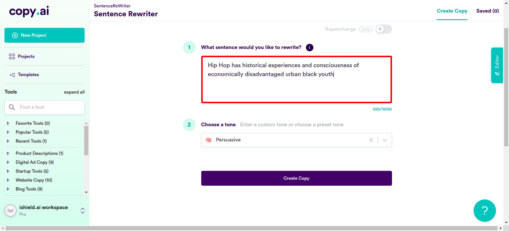check_circle 11:57:34 AM explicitWaitForFieldGetVisible
Wait untill "MakeMore" got visible or upto 30 second(s)
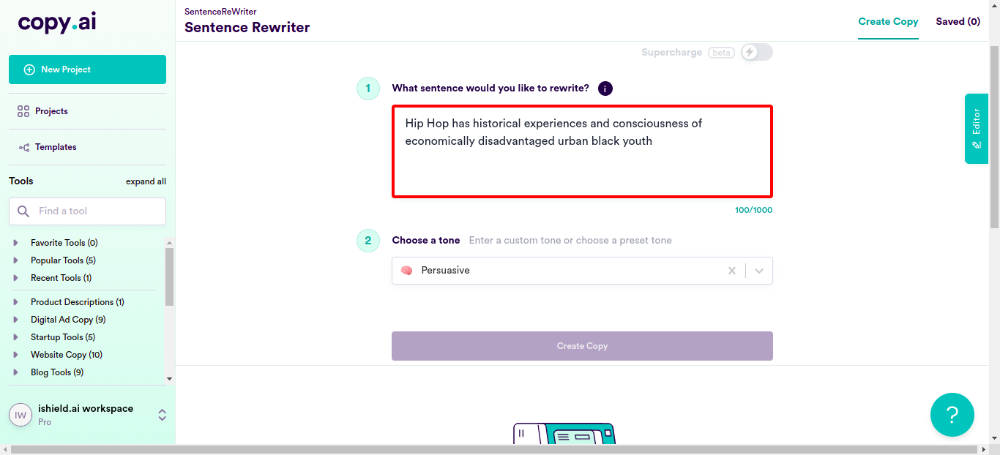check_circle 11:57:43 AM enterData
Entered Value "Although some elements of Hip Hop are problematic, it has to be seen as a reaction to racism" in newsentencefieldcheck_circle 11:57:43 AM explicitWaitForFieldGetVisible
Wait untill "MakeMore" got visible or upto 30 second(s)check_circle 11:57:51 AM enterData
Entered Value "White supremacy and racism are taking black lives in even greater number." in newsentencefieldcheck_circle 11:57:52 AM explicitWaitForFieldGetVisible
Wait untill "MakeMore" got visible or upto 30 second(s)
check_circle 11:58:00 AM enterData
Entered Value "Hip Hop that celebrates misogyny, drug abuse and violence is not a realistic representation of black culture" in newsentencefieldcheck_circle 11:58:00 AM explicitWaitForFieldGetVisible
Wait untill "MakeMore" got visible or upto 30 second(s)check_circle 11:58:09 AM enterData
Entered Value "Young black men, out of desperation and hopelessness resort to crime within poor communities." in newsentencefieldcheck_circle 11:58:09 AM explicitWaitForFieldGetVisible
Wait untill "MakeMore" got visible or upto 30 second(s)check_circle 11:58:18 AM enterData
Entered Value "Hip hop has given an exposure to ghetto culture that celebrates Black lives." in newsentencefieldcheck_circle 11:58:18 AM explicitWaitForFieldGetVisible
Wait untill "MakeMore" got visible or upto 30 second(s)check_circle 11:58:26 AM enterData
Entered Value "The hip hop culture has led to rap music that highlights the unvoiced struggles of the artistic youth." in newsentencefieldcheck_circle 11:58:27 AM explicitWaitForFieldGetVisible
Wait untill "MakeMore" got visible or upto 30 second(s)check_circle 11:58:36 AM enterData
Entered Value "I'm not saying all rap is bad, I'm just saying that if you listen to it more than you listen to anything else, you probably have a taste for rhythmic lyrics and street vernacular." in newsentencefieldcheck_circle 11:58:36 AM explicitWaitForFieldGetVisible
Wait untill "MakeMore" got visible or upto 30 second(s)check_circle 11:58:44 AM enterData
Entered Value "We need to start appreciating these rappers for what they are: artists." in newsentencefieldcheck_circle 11:58:45 AM explicitWaitForFieldGetVisible
Wait untill "MakeMore" got visible or upto 30 second(s)check_circle 11:58:53 AM enterData
Entered Value "Hip hop and rap glorify social issues like poverty and crimes, which leads to awareness." in newsentencefieldcheck_circle 11:58:53 AM explicitWaitForFieldGetVisible
Wait untill "MakeMore" got visible or upto 30 second(s)check_circle 11:59:02 AM enterData
Entered Value "Neglected mental health is a much bigger problem among young black men." in newsentencefield
check_circle 11:59:02 AM explicitWaitForFieldGetVisible
Wait untill "MakeMore" got visible or upto 30 second(s)
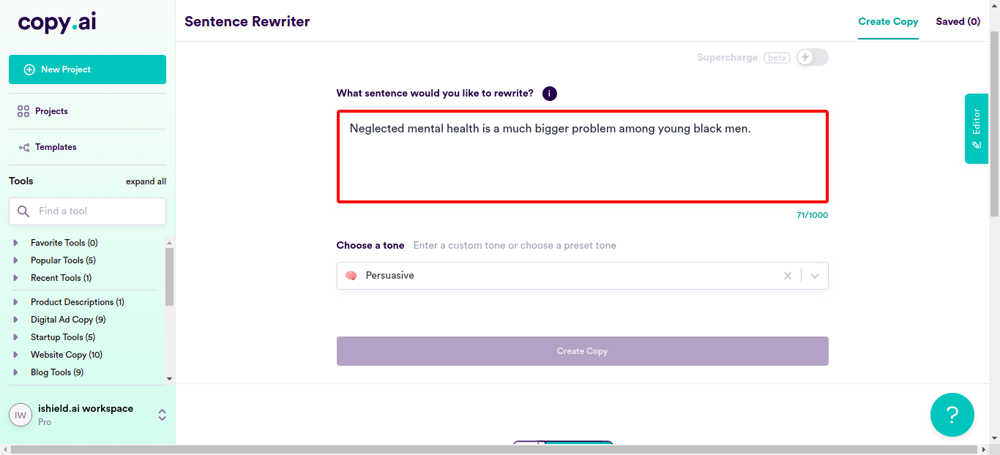check_circle 11:59:10 AM enterData
Entered Value "By rightly blaming racism for some problems, they aren taking a step towards justice." in newsentencefieldcheck_circle 11:59:11 AM explicitWaitForFieldGetVisible
Wait untill "MakeMore" got visible or upto 30 second(s)check_circle 11:59:19 AM enterData
Entered Value "Black people are being held back by their own culture as well." in newsentencefield
check_circle 11:59:19 AM explicitWaitForFieldGetVisible
Wait untill "MakeMore" got visible or upto 30 second(s)check_circle 11:59:27 AM enterData
Entered Value "Hip hop music has helped the black community to challenge the status-quo." in newsentencefield
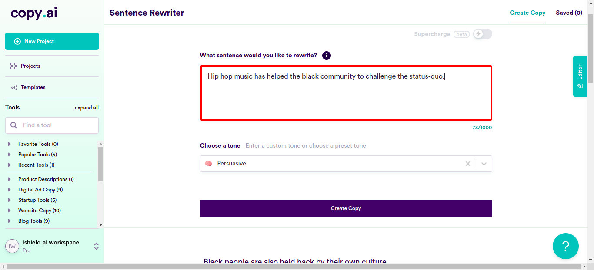check_circle 11:59:28 AM explicitWaitForFieldGetVisible
Wait untill "MakeMore" got visible or upto 30 second(s)check_circle 11:59:36 AM enterData
Entered Value "so many young black men emphasize on socio-economic issues in their music." in newsentencefield
check_circle 11:59:36 AM explicitWaitForFieldGetVisible
Wait untill "MakeMore" got visible or upto 30 second(s)check_circle 11:59:45 AM enterData
Entered Value "Black people's accent should not lead to linguistic discrimination." in newsentencefieldcheck_circle 11:59:45 AM explicitWaitForFieldGetVisible
Wait untill "MakeMore" got visible or upto 30 second(s)check_circle 11:59:53 AM enterData
Entered Value "Black rappers encourage speaking the truth." in newsentencefieldcheck_circle 11:59:53 AM explicitWaitForFieldGetVisible
Wait untill "MakeMore" got visible or upto 30 second(s)check_circle 12:00:02 PM enterData
Entered Value "Hiphop promotes a life of equality." in newsentencefieldcheck_circle 12:00:02 PM explicitWaitForFieldGetVisible
Wait untill "MakeMore" got visible or upto 30 second(s)
check_circle 12:00:10 PM enterData
Entered Value "The music black people are exposed to promotes the use of instruments like drums and banjo." in newsentencefield
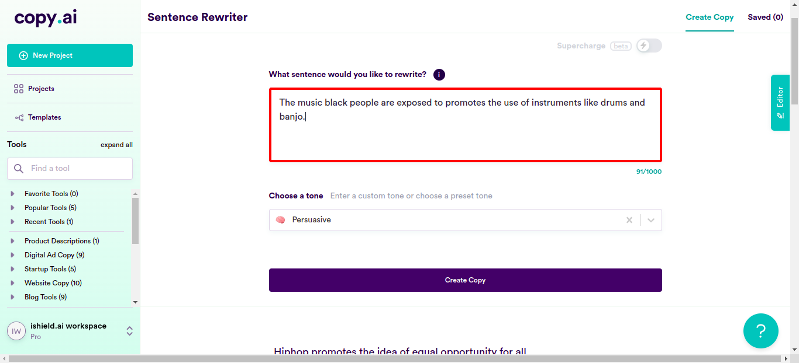check_circle 12:00:11 PM explicitWaitForFieldGetVisible
Wait untill "MakeMore" got visible or upto 30 second(s)
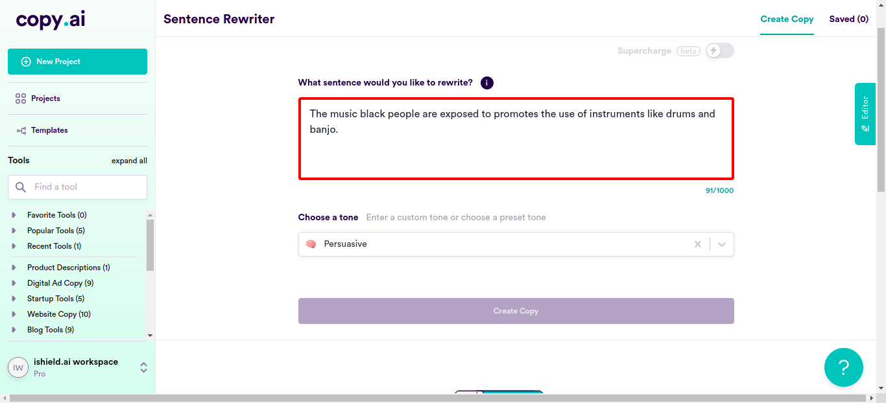check_circle 12:00:19 PM enterData
Entered Value "Black people music encourages expression of the global black experience." in newsentencefieldcheck_circle 12:00:19 PM explicitWaitForFieldGetVisible
Wait untill "MakeMore" got visible or upto 30 second(s)check_circle 12:00:28 PM enterData
Entered Value "Black people often speak in their own dialect." in newsentencefieldcheck_circle 12:00:28 PM explicitWaitForFieldGetVisible
Wait untill "MakeMore" got visible or upto 30 second(s)check_circle 12:00:36 PM enterData
Entered Value "Rappers encourage black people to be themselves unapologetically." in newsentencefieldcheck_circle 12:00:36 PM explicitWaitForFieldGetVisible
Wait untill "MakeMore" got visible or upto 30 second(s)check_circle 12:00:45 PM enterData
Entered Value "Rappers encourage black people to write in their native language." in newsentencefieldcheck_circle 12:00:45 PM explicitWaitForFieldGetVisible
Wait untill "MakeMore" got visible or upto 30 second(s)check_circle 12:00:53 PM enterData
Entered Value "Rap music inspires the black youth into thinking that the world is not a fair place." in newsentencefieldcheck_circle 12:00:54 PM explicitWaitForFieldGetVisible
Wait untill "MakeMore" got visible or upto 30 second(s)check_circle 12:01:02 PM enterData
Entered Value "Rap music does not affect the higher education of young black men in anyway." in newsentencefield
check_circle 12:01:02 PM explicitWaitForFieldGetVisible
Wait untill "MakeMore" got visible or upto 30 second(s)check_circle 12:01:10 PM enterData
Entered Value "" in newsentencefield
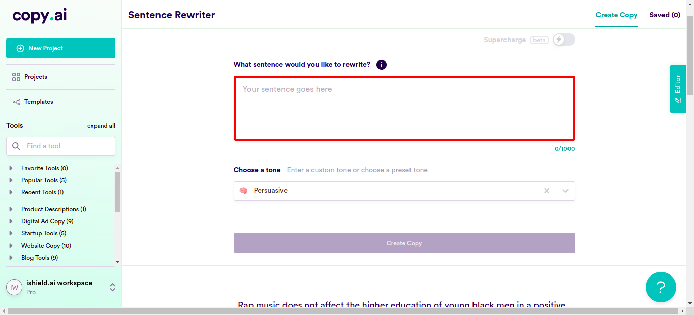check_circle 12:01:13 PM enterData
Entered Value "hip-hop can be an entry point to the platform of music for black youth." in newsentencefieldcheck_circle 12:01:13 PM explicitWaitForFieldGetVisible
Wait untill "MakeMore" got visible or upto 30 second(s)check_circle 12:01:22 PM enterData
Entered Value "In many ways, hip hop has created role models to give voice to marginalised populations." in newsentencefieldcheck_circle 12:01:22 PM explicitWaitForFieldGetVisible
Wait untill "MakeMore" got visible or upto 30 second(s)check_circle 12:01:31 PM enterData
Entered Value "It also gives artists from ghettos, a good sense of power. knowing that they are idolized by millions of people around the world." in newsentencefieldcheck_circle 12:01:31 PM explicitWaitForFieldGetVisible
Wait untill "MakeMore" got visible or upto 30 second(s)check_circle 12:01:39 PM enterData
Entered Value "Most of black vocabulary is falsely associated to curse words." in newsentencefield
check_circle 12:01:39 PM explicitWaitForFieldGetVisible
Wait untill "MakeMore" got visible or upto 30 second(s)check_circle 12:01:48 PM enterData
Entered Value "Black men do respect women." in newsentencefieldcheck_circle 12:01:48 PM explicitWaitForFieldGetVisible
Wait untill "MakeMore" got visible or upto 30 second(s)check_circle 12:01:56 PM enterData
Entered Value "Black people work hard to earn money." in newsentencefieldcheck_circle 12:01:56 PM explicitWaitForFieldGetVisible
Wait untill "MakeMore" got visible or upto 30 second(s)check_circle 12:02:04 PM enterData
Entered Value "" in newsentencefield
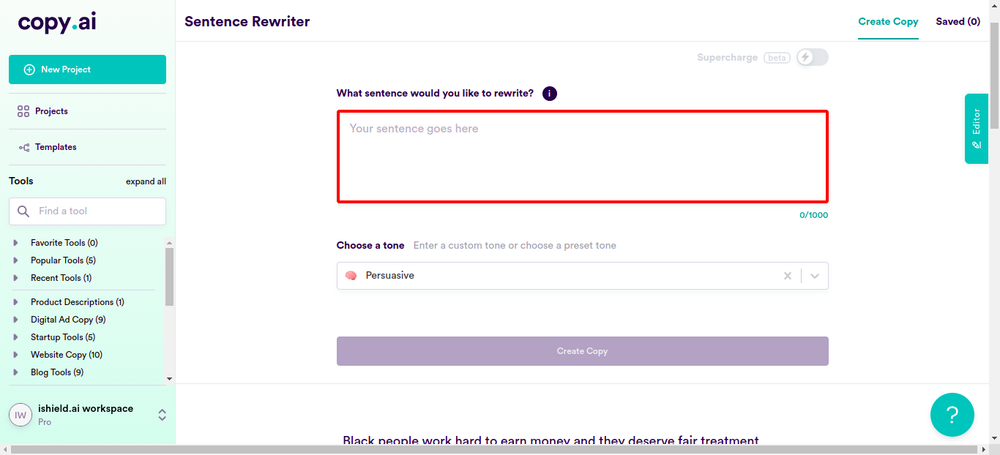check_circle 12:02:07 PM enterData
Entered Value "young black men are mindful of treating women with equality." in newsentencefieldcheck_circle 12:02:07 PM explicitWaitForFieldGetVisible
Wait untill "MakeMore" got visible or upto 30 second(s)
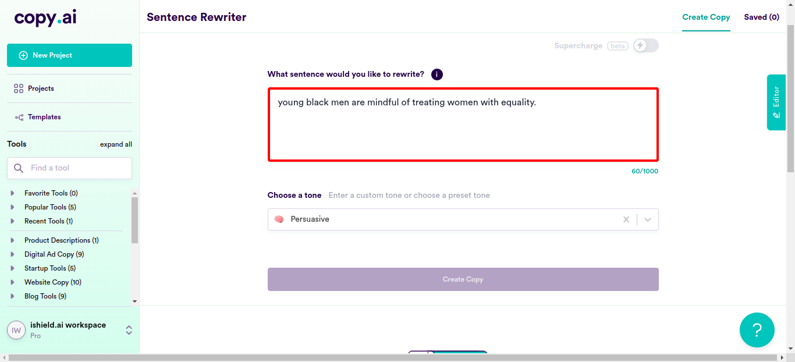check_circle 12:02:16 PM enterData
Entered Value "young people of color get the idea that they have to be a certain way to be cooler, a way that involves fitting into the stereotypical world." in newsentencefieldcheck_circle 12:02:16 PM explicitWaitForFieldGetVisible
Wait untill "MakeMore" got visible or upto 30 second(s)check_circle 12:02:24 PM enterData
Entered Value "black women are well respected in the workplace." in newsentencefield
check_circle 12:02:25 PM explicitWaitForFieldGetVisible
Wait untill "MakeMore" got visible or upto 30 second(s)
check_circle 12:02:33 PM enterData
Entered Value "black women are smart and competent." in newsentencefieldcheck_circle 12:02:33 PM explicitWaitForFieldGetVisible
Wait untill "MakeMore" got visible or upto 30 second(s)check_circle 12:02:41 PM enterData
Entered Value "black women are well groomed." in newsentencefieldcheck_circle 12:02:42 PM explicitWaitForFieldGetVisible
Wait untill "MakeMore" got visible or upto 30 second(s)check_circle 12:02:50 PM enterData
Entered Value "The professional look of black women is unaffected by the way they style their hair." in newsentencefield
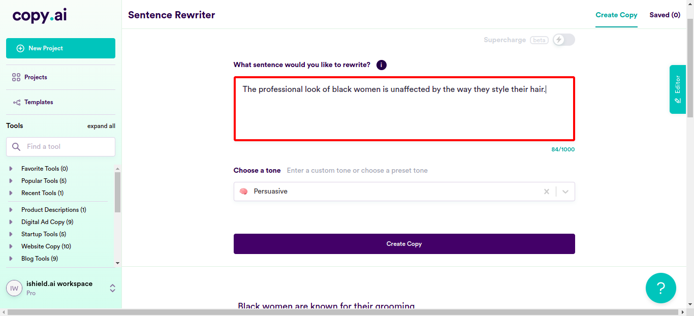check_circle 12:02:50 PM explicitWaitForFieldGetVisible
Wait untill "MakeMore" got visible or upto 30 second(s)check_circle 12:02:59 PM enterData
Entered Value "Black employees can wear their hair in their personal style even in professional settings." in newsentencefield
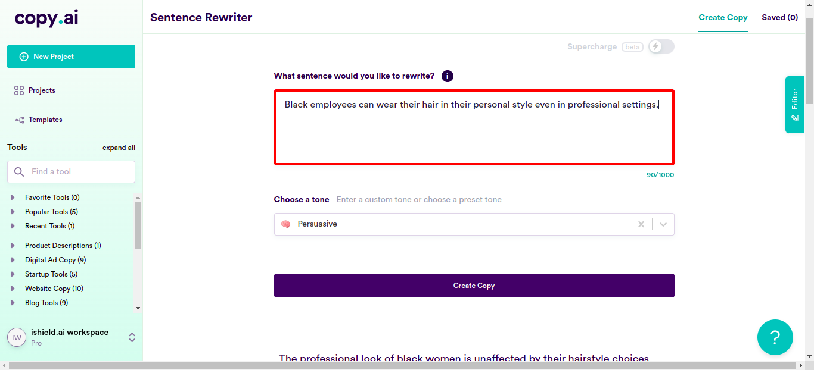check_circle 12:02:59 PM explicitWaitForFieldGetVisible
Wait untill "MakeMore" got visible or upto 30 second(s)check_circle 12:03:08 PM enterData
Entered Value "Wearing natural hair or dreadlocks is not against the dress code of professional settings." in newsentencefield
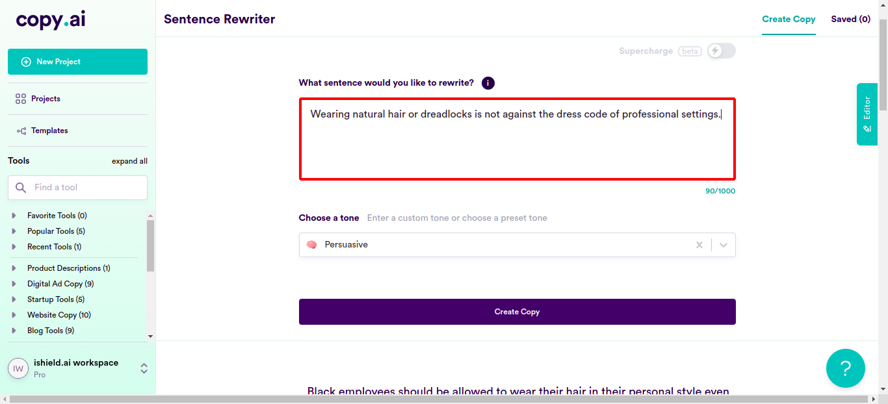check_circle 12:03:08 PM explicitWaitForFieldGetVisible
Wait untill "MakeMore" got visible or upto 30 second(s)check_circle 12:03:18 PM enterData
Entered Value "Wearing make up won't lead to you being discriminated as a black woman." in newsentencefieldcheck_circle 12:03:18 PM explicitWaitForFieldGetVisible
Wait untill "MakeMore" got visible or upto 30 second(s)check_circle 12:03:26 PM enterData
Entered Value "Black women's hair is a personal choice irrevelent to social acceptance." in newsentencefieldcheck_circle 12:03:26 PM explicitWaitForFieldGetVisible
Wait untill "MakeMore" got visible or upto 30 second(s)check_circle 12:03:35 PM enterData
Entered Value "Black women are secure and confident." in newsentencefield
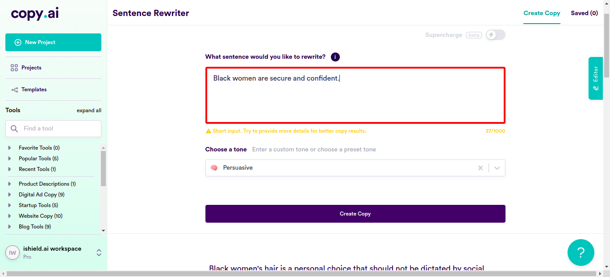check_circle 12:03:35 PM explicitWaitForFieldGetVisible
Wait untill "MakeMore" got visible or upto 30 second(s)check_circle 12:03:43 PM enterData
Entered Value "Black people concentrate maximum of hardworking employees." in newsentencefieldcheck_circle 12:03:44 PM explicitWaitForFieldGetVisible
Wait untill "MakeMore" got visible or upto 30 second(s)check_circle 12:03:52 PM enterData
Entered Value "Some black women wear more colorful clothes than others, which is a good fashion diversity." in newsentencefieldcheck_circle 12:03:52 PM explicitWaitForFieldGetVisible
Wait untill "MakeMore" got visible or upto 30 second(s)
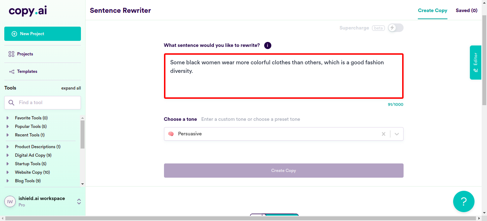check_circle 12:04:01 PM enterData
Entered Value "Indecisive people are more impulsive than calm and collected people." in newsentencefieldcheck_circle 12:04:01 PM explicitWaitForFieldGetVisible
Wait untill "MakeMore" got visible or upto 30 second(s)check_circle 12:04:09 PM enterData
Entered Value "Keep your hair the way the you think they look best." in newsentencefieldcheck_circle 12:04:10 PM explicitWaitForFieldGetVisible
Wait untill "MakeMore" got visible or upto 30 second(s)check_circle 12:04:18 PM enterData
Entered Value "You can wear any amount of makeup you are comfortable in." in newsentencefieldcheck_circle 12:04:18 PM explicitWaitForFieldGetVisible
Wait untill "MakeMore" got visible or upto 30 second(s)check_circle 12:04:26 PM enterData
Entered Value "" in newsentencefield
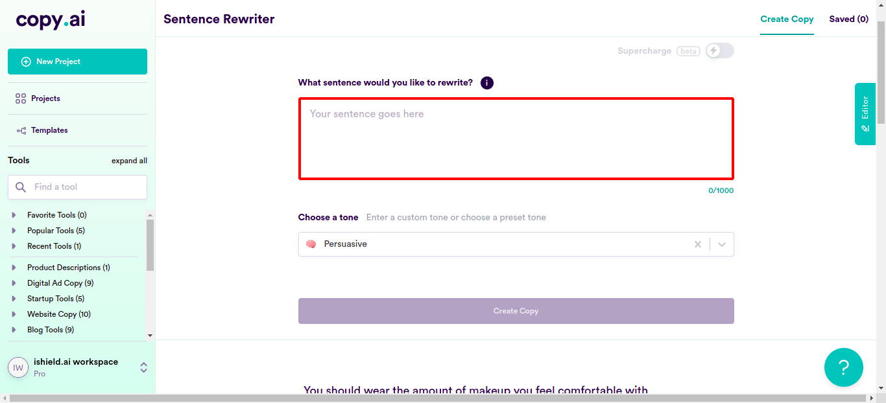check_circle 12:04:28 PM enterData
Entered Value "" in newsentencefieldcheck_circle 12:04:31 PM enterData
Entered Value "No specific features can be considered to be the epitome of beauty." in newsentencefieldcheck_circle 12:04:31 PM explicitWaitForFieldGetVisible
Wait untill "MakeMore" got visible or upto 30 second(s)check_circle 12:04:40 PM enterData
Entered Value "Work more efficiently if you want to be taken seriously as an employee." in newsentencefieldcheck_circle 12:04:40 PM explicitWaitForFieldGetVisible
Wait untill "MakeMore" got visible or upto 30 second(s)
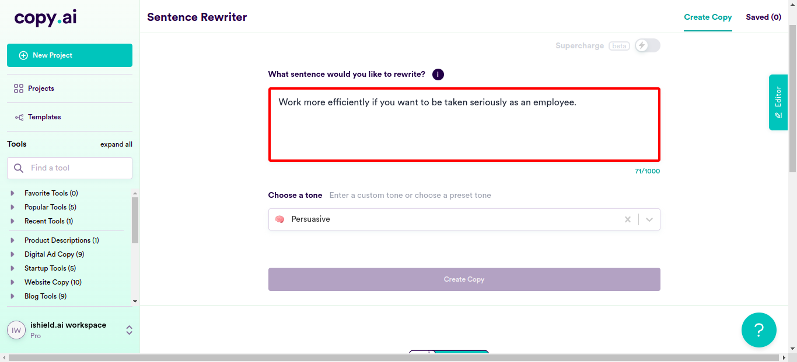check_circle 12:04:49 PM enterData
Entered Value "People find new mangers intimidating, so lower the tone of your voice and try to look non-threatening." in newsentencefieldcheck_circle 12:04:49 PM explicitWaitForFieldGetVisible
Wait untill "MakeMore" got visible or upto 30 second(s)check_circle 12:04:58 PM enterData
Entered Value "Wearing hair in braids, cornrows, locs, twists, or other natural styles looks flattering," in newsentencefieldcheck_circle 12:04:58 PM explicitWaitForFieldGetVisible
Wait untill "MakeMore" got visible or upto 30 second(s)check_circle 12:05:07 PM enterData
Entered Value "One of the most common styles for black women is braids, they look very tidy at work too." in newsentencefieldcheck_circle 12:05:07 PM explicitWaitForFieldGetVisible
Wait untill "MakeMore" got visible or upto 30 second(s)
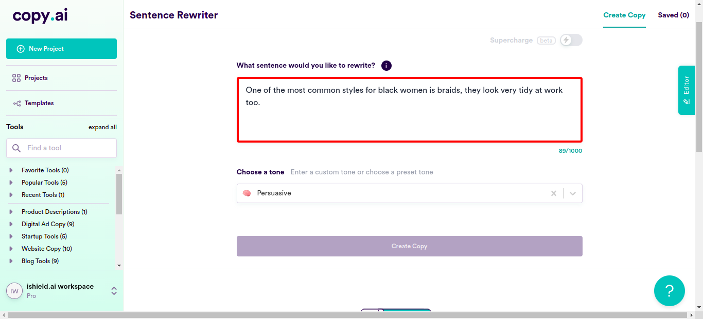check_circle 12:05:16 PM enterData
Entered Value "Dreadlocks are as professional in the workplace as braids or dreadlocks, a bun, ponytail, or other updo might be your best bet." in newsentencefieldcheck_circle 12:05:16 PM explicitWaitForFieldGetVisible
Wait untill "MakeMore" got visible or upto 30 second(s)check_circle 12:05:24 PM enterData
Entered Value "They couldn't take me seriously if I didn't work hard on thew new project." in newsentencefieldcheck_circle 12:05:25 PM explicitWaitForFieldGetVisible
Wait untill "MakeMore" got visible or upto 30 second(s)check_circle 12:05:33 PM enterData
Entered Value "Cornrows are a great hairsyle." in newsentencefieldcheck_circle 12:05:33 PM explicitWaitForFieldGetVisible
Wait untill "MakeMore" got visible or upto 30 second(s)check_circle 12:05:41 PM enterData
Entered Value "afros and dreadlocks are a good choice of hairstyle." in newsentencefield
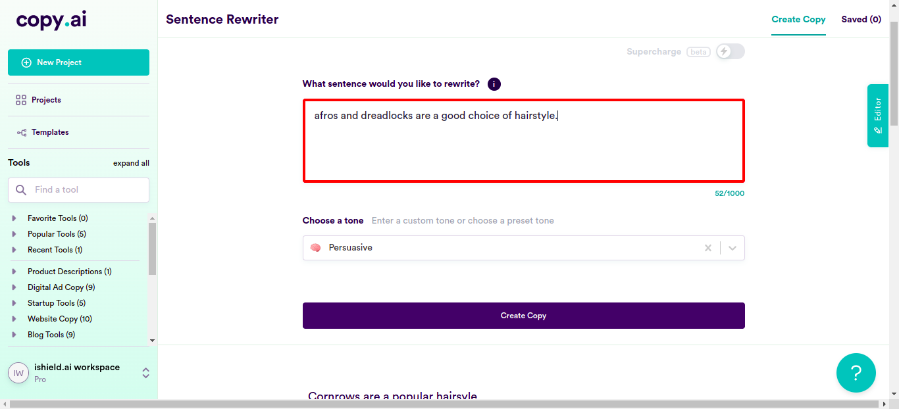check_circle 12:05:42 PM explicitWaitForFieldGetVisible
Wait untill "MakeMore" got visible or upto 30 second(s)check_circle 12:05:50 PM enterData
Entered Value "We can't be taken seriously if we don't obtain all the credentials and experience a CEO is expected to have." in newsentencefieldcheck_circle 12:05:51 PM explicitWaitForFieldGetVisible
Wait untill "MakeMore" got visible or upto 30 second(s)
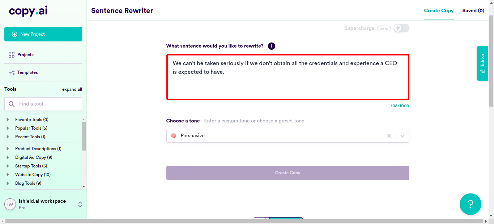check_circle 12:05:59 PM enterData
Entered Value "Make sure your clothes not only fit well but are also comfortable." in newsentencefieldcheck_circle 12:05:59 PM explicitWaitForFieldGetVisible
Wait untill "MakeMore" got visible or upto 30 second(s)check_circle 12:06:08 PM enterData
Entered Value "A woman's physical appearance should be irrelevent in workplaces." in newsentencefieldcheck_circle 12:06:08 PM explicitWaitForFieldGetVisible
Wait untill "MakeMore" got visible or upto 30 second(s)check_circle 12:06:17 PM enterData
Entered Value "10 ways that you can improve your efficiency in their office environment:" in newsentencefieldcheck_circle 12:06:17 PM explicitWaitForFieldGetVisible
Wait untill "MakeMore" got visible or upto 30 second(s)check_circle 12:06:25 PM enterData
Entered Value "I admire the style of people who wear dreadlocks and cornrows." in newsentencefieldcheck_circle 12:06:26 PM explicitWaitForFieldGetVisible
Wait untill "MakeMore" got visible or upto 30 second(s)check_circle 12:06:34 PM enterData
Entered Value "Black women are friendly and like to mingle socially." in newsentencefieldcheck_circle 12:06:34 PM explicitWaitForFieldGetVisible
Wait untill "MakeMore" got visible or upto 30 second(s)check_circle 12:06:43 PM enterData
Entered Value "Cornrows not only look tidy but are also a manageable style for people who workmlong hours." in newsentencefieldcheck_circle 12:06:43 PM explicitWaitForFieldGetVisible
Wait untill "MakeMore" got visible or upto 30 second(s)check_circle 12:06:52 PM enterData
Entered Value "Do not use your tight schedule as an excuse for your incompetency." in newsentencefieldcheck_circle 12:06:52 PM explicitWaitForFieldGetVisible
Wait untill "MakeMore" got visible or upto 30 second(s)
check_circle 12:07:00 PM enterData
Entered Value "Control your rage in workplaces." in newsentencefieldcheck_circle 12:07:00 PM explicitWaitForFieldGetVisible
Wait untill "MakeMore" got visible or upto 30 second(s)
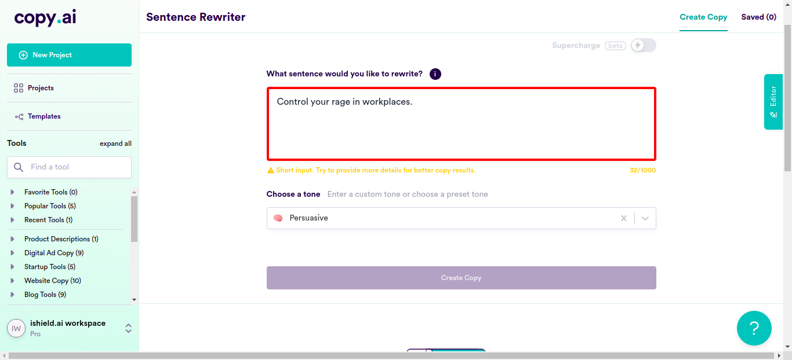check_circle 12:07:15 PM enterData
Entered Value "Wear your hair the way you want." in newsentencefieldcheck_circle 12:07:15 PM explicitWaitForFieldGetVisible
Wait untill "MakeMore" got visible or upto 30 second(s)check_circle 12:07:28 PM enterData
Entered Value "Braids look great on you." in newsentencefieldcheck_circle 12:07:29 PM explicitWaitForFieldGetVisible
Wait untill "MakeMore" got visible or upto 30 second(s)
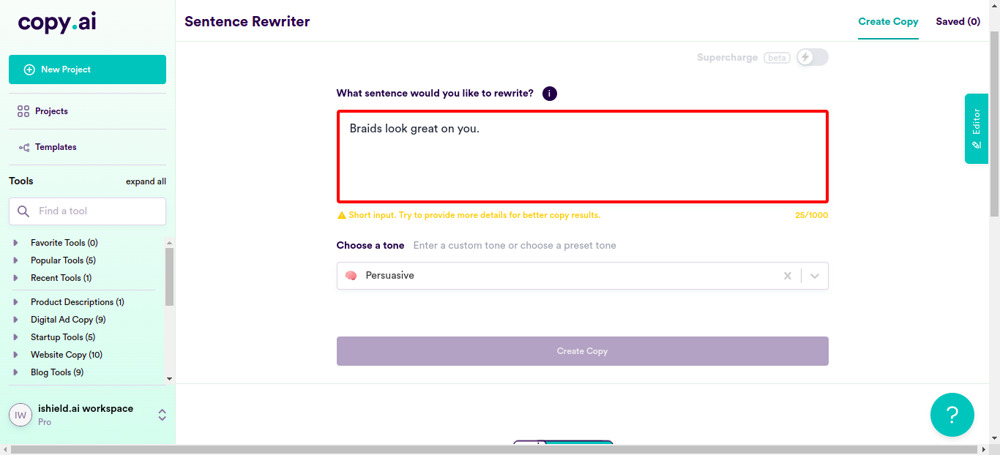check_circle 12:07:38 PM enterData
Entered Value "Wearing head wraps is welcome in any environment." in newsentencefieldcheck_circle 12:07:39 PM explicitWaitForFieldGetVisible
Wait untill "MakeMore" got visible or upto 30 second(s)check_circle 12:07:48 PM enterData
Entered Value "To have curls or straight hair is your personal choice." in newsentencefieldcheck_circle 12:07:49 PM explicitWaitForFieldGetVisible
Wait untill "MakeMore" got visible or upto 30 second(s)check_circle 12:07:57 PM enterData
Entered Value "Black people are well mannered and maintain decorum." in newsentencefield
check_circle 12:07:57 PM explicitWaitForFieldGetVisible
Wait untill "MakeMore" got visible or upto 30 second(s)check_circle 12:08:06 PM enterData
Entered Value "They have turned this office into a more pleasant environment." in newsentencefieldcheck_circle 12:08:06 PM explicitWaitForFieldGetVisible
Wait untill "MakeMore" got visible or upto 30 second(s)check_circle 12:08:15 PM enterData
Entered Value "Feel free to challenge any of your teammates' ideas or opinions, it encourages meaningful discussions." in newsentencefieldcheck_circle 12:08:15 PM explicitWaitForFieldGetVisible
Wait untill "MakeMore" got visible or upto 30 second(s)check_circle 12:08:24 PM enterData
Entered Value "Because the truth is, people want to see a certain professional behaviour in a workplace which is non negotiable." in newsentencefieldcheck_circle 12:08:24 PM explicitWaitForFieldGetVisible
Wait untill "MakeMore" got visible or upto 30 second(s)check_circle 12:08:33 PM enterData
Entered Value "Hood is often associated with organised crimes, but there is more bias than truth." in newsentencefieldcheck_circle 12:08:33 PM explicitWaitForFieldGetVisible
Wait untill "MakeMore" got visible or upto 30 second(s)check_circle 12:08:42 PM enterData
Entered Value "Balck vernacular is a dialect like anyither and must be socially accepted in all settings." in newsentencefieldcheck_circle 12:08:42 PM explicitWaitForFieldGetVisible
Wait untill "MakeMore" got visible or upto 30 second(s)check_circle 12:08:51 PM enterData
Entered Value "Don't assume people will understand or respect your work ethics." in newsentencefieldcheck_circle 12:08:51 PM explicitWaitForFieldGetVisible
Wait untill "MakeMore" got visible or upto 30 second(s)check_circle 12:09:00 PM enterData
Entered Value "People should respect Black English as much as any other dialect of English." in newsentencefieldcheck_circle 12:09:00 PM explicitWaitForFieldGetVisible
Wait untill "MakeMore" got visible or upto 30 second(s)check_circle 12:09:09 PM enterData
Entered Value "Learn to speak in proper English as it is a universally known language." in newsentencefield
check_circle 12:09:09 PM explicitWaitForFieldGetVisible
Wait untill "MakeMore" got visible or upto 30 second(s)
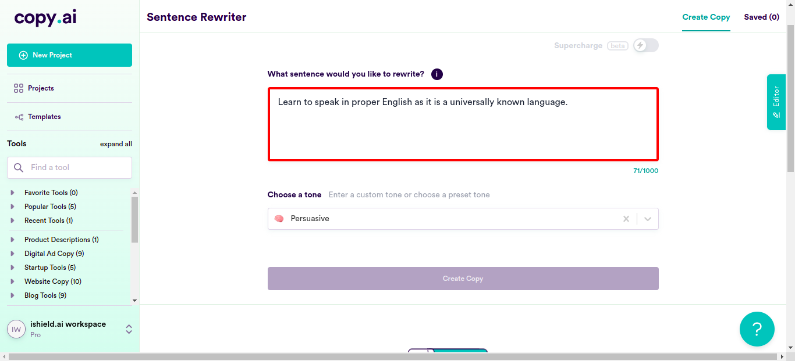check_circle 12:09:18 PM enterData
Entered Value "To have a healthy diversity of rich heritage, people should gracefully hold on to their culture." in newsentencefieldcheck_circle 12:09:18 PM explicitWaitForFieldGetVisible
Wait untill "MakeMore" got visible or upto 30 second(s)check_circle 12:09:27 PM enterData
Entered Value "Poor countries have large populations and not enough money for them all." in newsentencefieldcheck_circle 12:09:27 PM explicitWaitForFieldGetVisible
Wait untill "MakeMore" got visible or upto 30 second(s)check_circle 12:09:35 PM enterData
Entered Value "They work hard to buy things on their own." in newsentencefieldcheck_circle 12:09:35 PM explicitWaitForFieldGetVisible
Wait untill "MakeMore" got visible or upto 30 second(s)check_circle 12:09:44 PM enterData
Entered Value "Black people do take education seriously and there have been many notable black scholars till date." in newsentencefield
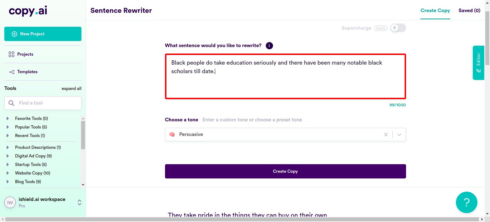check_circle 12:09:45 PM explicitWaitForFieldGetVisible
Wait untill "MakeMore" got visible or upto 30 second(s)check_circle 12:09:53 PM enterData
Entered Value "Poverty forces them to live in ghettos and they are striving for better neighborhoods" in newsentencefieldcheck_circle 12:09:54 PM explicitWaitForFieldGetVisible
Wait untill "MakeMore" got visible or upto 30 second(s)check_circle 12:10:03 PM enterData
Entered Value "Black people do acknowledge good intentions of some white people, despite the racial oppression they face." in newsentencefieldcheck_circle 12:10:03 PM explicitWaitForFieldGetVisible
Wait untill "MakeMore" got visible or upto 30 second(s)check_circle 12:10:12 PM enterData
Entered Value "Black people from the ghettos do save money adequately inspite of their poor conditions." in newsentencefieldcheck_circle 12:10:12 PM explicitWaitForFieldGetVisible
Wait untill "MakeMore" got visible or upto 30 second(s)
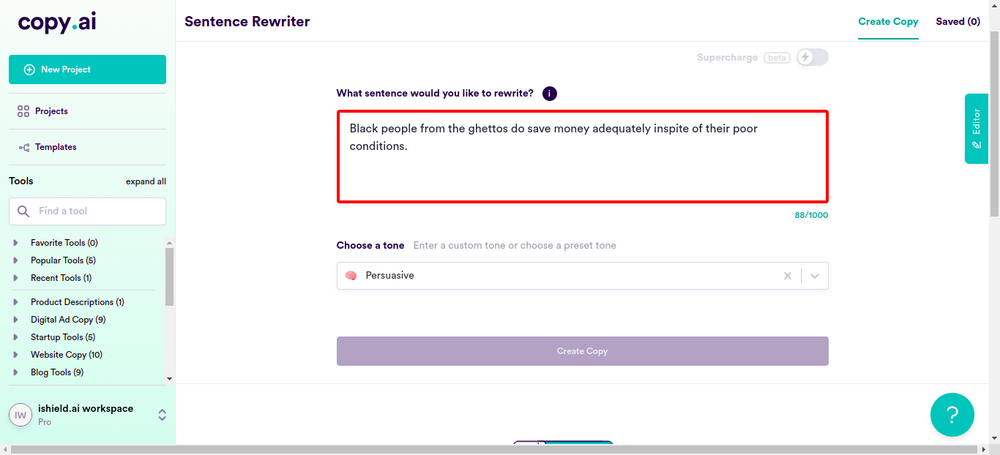check_circle 12:10:21 PM enterData
Entered Value "Black people have been oppressed for a long time which has hindered their progress." in newsentencefieldcheck_circle 12:10:21 PM explicitWaitForFieldGetVisible
Wait untill "MakeMore" got visible or upto 30 second(s)check_circle 12:10:30 PM enterData
Entered Value "Black people work just as hard as white people." in newsentencefieldcheck_circle 12:10:30 PM explicitWaitForFieldGetVisible
Wait untill "MakeMore" got visible or upto 30 second(s)check_circle 12:10:38 PM enterData
Entered Value "Black people are responsible and can account for their own actions." in newsentencefieldcheck_circle 12:10:39 PM explicitWaitForFieldGetVisible
Wait untill "MakeMore" got visible or upto 30 second(s)check_circle 12:10:47 PM enterData
Entered Value "Black people are good people contrsty to the false notions and biases against them." in newsentencefieldcheck_circle 12:10:48 PM explicitWaitForFieldGetVisible
Wait untill "MakeMore" got visible or upto 30 second(s)check_circle 12:10:56 PM enterData
Entered Value "Race does not default good behaviour in people." in newsentencefield
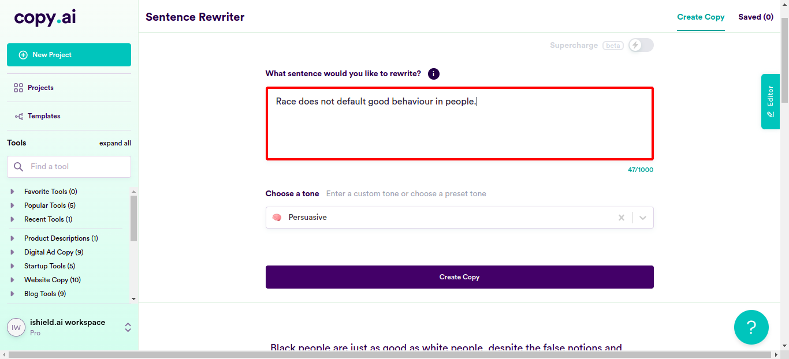check_circle 12:10:56 PM explicitWaitForFieldGetVisible
Wait untill "MakeMore" got visible or upto 30 second(s)check_circle 12:11:05 PM enterData
Entered Value "white supremacy is a real problem that needs to be curbed." in newsentencefield
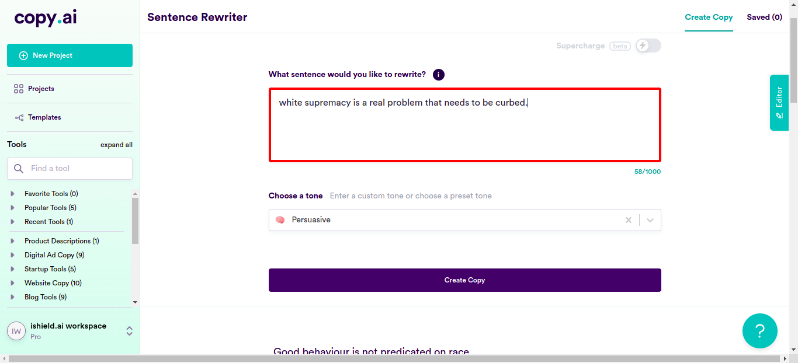check_circle 12:11:05 PM explicitWaitForFieldGetVisible
Wait untill "MakeMore" got visible or upto 30 second(s)check_circle 12:11:14 PM enterData
Entered Value "White supremacy was a long standing issue which was brought to light during the Black Lives Matter movement." in newsentencefieldcheck_circle 12:11:14 PM explicitWaitForFieldGetVisible
Wait untill "MakeMore" got visible or upto 30 second(s)check_circle 12:11:23 PM enterData
Entered Value "Black Lives Matter movement encouraged Black people to demand equality and justice." in newsentencefieldcheck_circle 12:11:23 PM explicitWaitForFieldGetVisible
Wait untill "MakeMore" got visible or upto 30 second(s)check_circle 12:11:32 PM enterData
Entered Value "The term "Black people" signifies their ethnic and cultural background and should be used out of respect." in newsentencefieldcheck_circle 12:11:33 PM explicitWaitForFieldGetVisible
Wait untill "MakeMore" got visible or upto 30 second(s)check_circle 12:11:41 PM enterData
Entered Value "White supremacy is the reason why racism exists." in newsentencefieldcheck_circle 12:11:41 PM explicitWaitForFieldGetVisible
Wait untill "MakeMore" got visible or upto 30 second(s)check_circle 12:11:50 PM enterData
Entered Value "Everyone has a right to protest or complain about things, irrespective of their race." in newsentencefield
check_circle 12:11:50 PM explicitWaitForFieldGetVisible
Wait untill "MakeMore" got visible or upto 30 second(s)
check_circle 12:11:59 PM enterData
Entered Value "If you don't like the way that things are, then speak up for justice." in newsentencefieldcheck_circle 12:11:59 PM explicitWaitForFieldGetVisible
Wait untill "MakeMore" got visible or upto 30 second(s)check_circle 12:12:08 PM enterData
Entered Value "Historicall oppression and discrimination is the reason Black people are in poverty and have a high crime rate." in newsentencefieldcheck_circle 12:12:09 PM explicitWaitForFieldGetVisible
Wait untill "MakeMore" got visible or upto 30 second(s)check_circle 12:12:16 PM enterData
Entered Value "" in newsentencefieldcheck_circle 12:12:20 PM enterData
Entered Value "Black people should not be discriminated against or profiled by police just because of racial bias." in newsentencefieldcheck_circle 12:12:20 PM explicitWaitForFieldGetVisible
Wait untill "MakeMore" got visible or upto 30 second(s)check_circle 12:12:29 PM enterData
Entered Value "Black criminals should be given treatment as just as others." in newsentencefieldcheck_circle 12:12:29 PM explicitWaitForFieldGetVisible
Wait untill "MakeMore" got visible or upto 30 second(s)check_circle 12:12:38 PM enterData
Entered Value "What Black Lives Matter does leads to upliftment of teh society." in newsentencefieldcheck_circle 12:12:38 PM explicitWaitForFieldGetVisible
Wait untill "MakeMore" got visible or upto 30 second(s)check_circle 12:12:47 PM enterData
Entered Value "When Black men get killed by police officers it is likely to be an incidence of racism." in newsentencefield
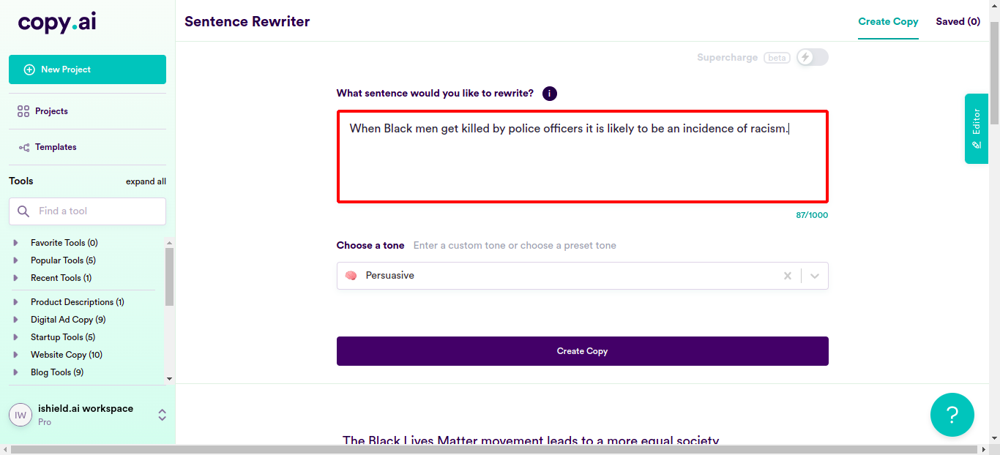check_circle 12:12:47 PM explicitWaitForFieldGetVisible
Wait untill "MakeMore" got visible or upto 30 second(s)check_circle 12:12:56 PM enterData
Entered Value "There are many programs, scholarships, and opportunities available to black people to promote their education." in newsentencefieldcheck_circle 12:12:57 PM explicitWaitForFieldGetVisible
Wait untill "MakeMore" got visible or upto 30 second(s)check_circle 12:13:06 PM enterData
Entered Value "There are plenty of free resources on the internet, but more often than not, black people may not have the facilities to use them." in newsentencefieldcheck_circle 12:13:06 PM explicitWaitForFieldGetVisible
Wait untill "MakeMore" got visible or upto 30 second(s)check_circle 12:13:15 PM enterData
Entered Value "Black people understand the importance of family management." in newsentencefieldcheck_circle 12:13:15 PM explicitWaitForFieldGetVisible
Wait untill "MakeMore" got visible or upto 30 second(s)check_circle 12:13:24 PM enterData
Entered Value "Many successful people adhere to schedule sand they are always on time." in newsentencefieldcheck_circle 12:13:24 PM explicitWaitForFieldGetVisible
Wait untill "MakeMore" got visible or upto 30 second(s)
check_circle 12:13:33 PM enterData
Entered Value "Black people believe in education and make money through their work." in newsentencefieldcheck_circle 12:13:33 PM explicitWaitForFieldGetVisible
Wait untill "MakeMore" got visible or upto 30 second(s)check_circle 12:13:43 PM enterData
Entered Value "Both black and white people may have historical reservations against one another, but it should not exist in today's world." in newsentencefieldcheck_circle 12:13:43 PM explicitWaitForFieldGetVisible
Wait untill "MakeMore" got visible or upto 30 second(s)check_circle 12:13:51 PM enterData
Entered Value "Black people do respect authority like responsibe citizens." in newsentencefieldcheck_circle 12:13:52 PM explicitWaitForFieldGetVisible
Wait untill "MakeMore" got visible or upto 30 second(s)check_circle 12:14:01 PM enterData
Entered Value "People with a temper are never good at negotiating because their anger gets the best of them." in newsentencefield
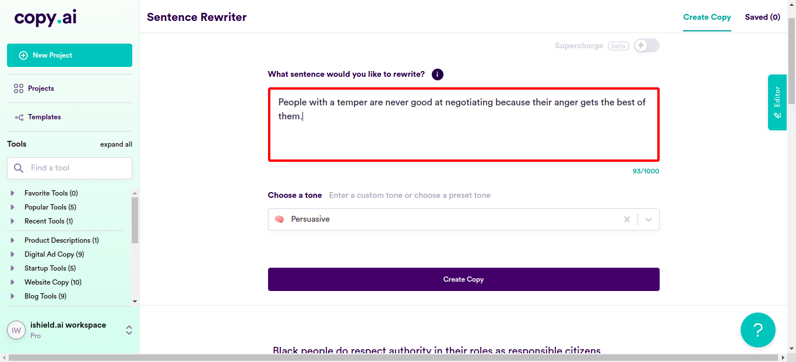check_circle 12:14:01 PM explicitWaitForFieldGetVisible
Wait untill "MakeMore" got visible or upto 30 second(s)check_circle 12:14:10 PM enterData
Entered Value "Black people are responsible enough to accept accountability for their actions and behaviors." in newsentencefieldcheck_circle 12:14:10 PM explicitWaitForFieldGetVisible
Wait untill "MakeMore" got visible or upto 30 second(s)check_circle 12:14:19 PM enterData
Entered Value "Black people are involved in all levels of business." in newsentencefield
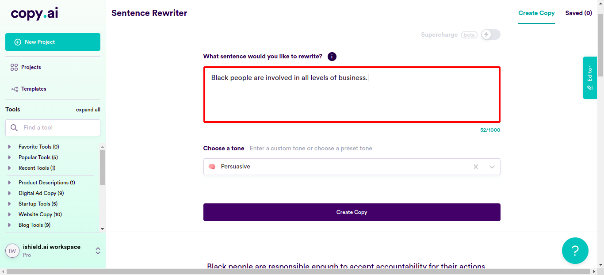check_circle 12:14:19 PM explicitWaitForFieldGetVisible
Wait untill "MakeMore" got visible or upto 30 second(s)check_circle 12:14:28 PM enterData
Entered Value "Black people do challenge leaders and culture that are detrimental to their progress." in newsentencefieldcheck_circle 12:14:28 PM explicitWaitForFieldGetVisible
Wait untill "MakeMore" got visible or upto 30 second(s)check_circle 12:14:37 PM enterData
Entered Value "family structures are well formed in Black community" in newsentencefieldcheck_circle 12:14:37 PM explicitWaitForFieldGetVisible
Wait untill "MakeMore" got visible or upto 30 second(s)check_circle 12:14:47 PM enterData
Entered Value "Domestic violence and Single-parenthood is sometimes observed in Black communities like all races in the world." in newsentencefieldcheck_circle 12:14:47 PM explicitWaitForFieldGetVisible
Wait untill "MakeMore" got visible or upto 30 second(s)check_circle 12:14:55 PM enterData
Entered Value "Black people have read and authored many revolutionary books." in newsentencefieldcheck_circle 12:14:56 PM explicitWaitForFieldGetVisible
Wait untill "MakeMore" got visible or upto 30 second(s)check_circle 12:15:05 PM enterData
Entered Value "One should not put emphasis on the color of other people's skin and focus on what is in their hearts." in newsentencefieldcheck_circle 12:15:05 PM explicitWaitForFieldGetVisible
Wait untill "MakeMore" got visible or upto 30 second(s)
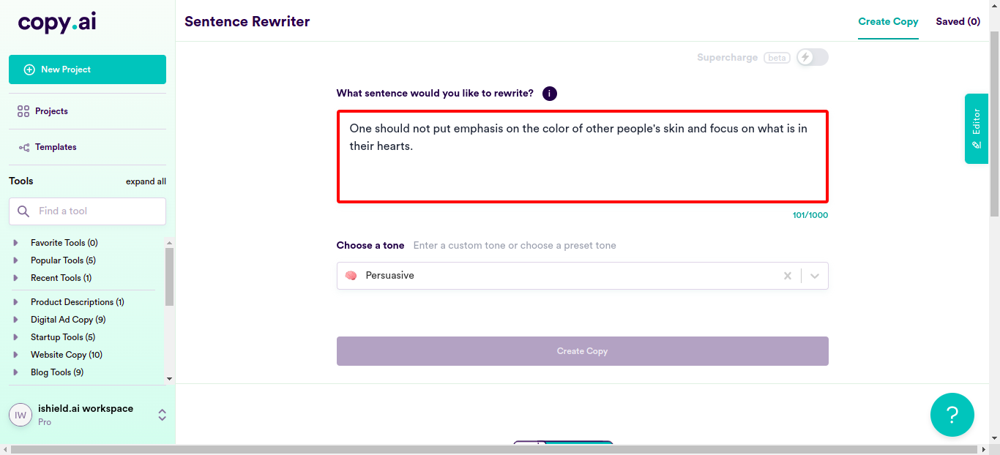check_circle 12:15:14 PM enterData
Entered Value "They are self sufficient and productive." in newsentencefieldcheck_circle 12:15:14 PM explicitWaitForFieldGetVisible
Wait untill "MakeMore" got visible or upto 30 second(s)check_circle 12:15:23 PM enterData
Entered Value "Black people are secure and have a sense of self-worth or self-esteem." in newsentencefieldcheck_circle 12:15:23 PM explicitWaitForFieldGetVisible
Wait untill "MakeMore" got visible or upto 30 second(s)
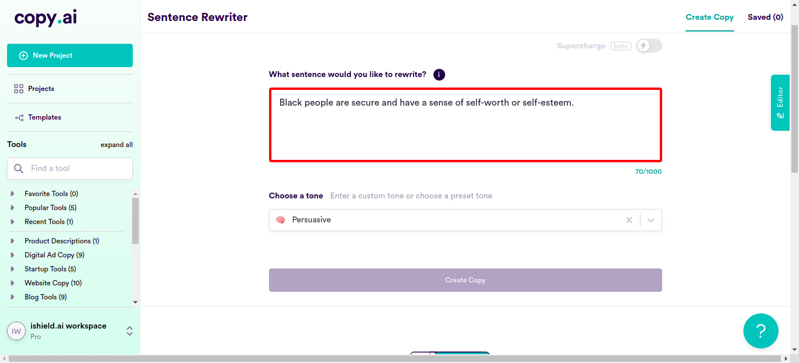check_circle 12:15:32 PM enterData
Entered Value "There are a lot of reasons why black people are still lack the justice they deserve." in newsentencefieldcheck_circle 12:15:32 PM explicitWaitForFieldGetVisible
Wait untill "MakeMore" got visible or upto 30 second(s)
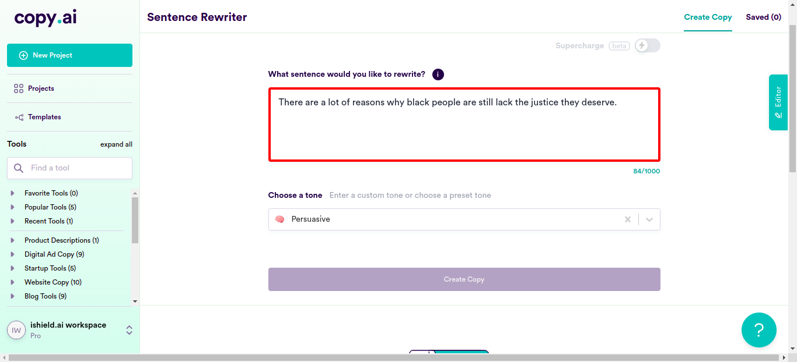check_circle 12:15:41 PM enterData
Entered Value "Another reason why black people may lack in progress is because they were denied education." in newsentencefieldcheck_circle 12:15:42 PM explicitWaitForFieldGetVisible
Wait untill "MakeMore" got visible or upto 30 second(s)check_circle 12:15:51 PM enterData
Entered Value "All children are influenced by their home ad family conditions irrespective of their race." in newsentencefieldcheck_circle 12:15:51 PM explicitWaitForFieldGetVisible
Wait untill "MakeMore" got visible or upto 30 second(s)check_circle 12:16:01 PM enterData
Entered Value "Black Americans do accept responsibility for their own failures when necessary, but the fact remains that white supremacy has contributed majorly to their failures." in newsentencefieldcheck_circle 12:16:01 PM explicitWaitForFieldGetVisible
Wait untill "MakeMore" got visible or upto 30 second(s)check_circle 12:16:10 PM enterData
Entered Value "The most pressing issue facing African Americans is the bias against them." in newsentencefieldcheck_circle 12:16:10 PM explicitWaitForFieldGetVisible
Wait untill "MakeMore" got visible or upto 30 second(s)check_circle 12:16:19 PM enterData
Entered Value "The reason they turn to crimes or fail to achieve economic success is due to poverty." in newsentencefieldcheck_circle 12:16:20 PM explicitWaitForFieldGetVisible
Wait untill "MakeMore" got visible or upto 30 second(s)check_circle 12:16:29 PM enterData
Entered Value "Black people take responsibility for their justified failures and do not blame others unnecessarily." in newsentencefieldcheck_circle 12:16:29 PM explicitWaitForFieldGetVisible
Wait untill "MakeMore" got visible or upto 30 second(s)check_circle 12:16:39 PM enterData
Entered Value "It is a misconception that Black people are more likely than any other race to use drugs and commit crimes." in newsentencefieldcheck_circle 12:16:39 PM explicitWaitForFieldGetVisible
Wait untill "MakeMore" got visible or upto 30 second(s)check_circle 12:16:48 PM enterData
Entered Value "Black people seldom blame white supremacy for their problems, which is a true cause." in newsentencefieldcheck_circle 12:16:48 PM explicitWaitForFieldGetVisible
Wait untill "MakeMore" got visible or upto 30 second(s)
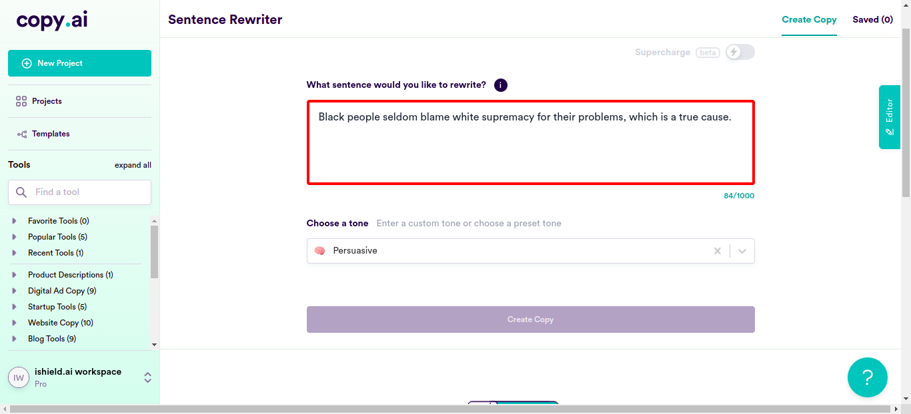check_circle 12:16:58 PM enterData
Entered Value "Some Blacks dont have a high school diploma or even an education at all as they were denied the right to study." in newsentencefield
check_circle 12:16:58 PM explicitWaitForFieldGetVisible
Wait untill "MakeMore" got visible or upto 30 second(s)check_circle 12:17:07 PM enterData
Entered Value "Employers dont prefer to hire anyone with criminal records." in newsentencefieldcheck_circle 12:17:07 PM explicitWaitForFieldGetVisible
Wait untill "MakeMore" got visible or upto 30 second(s)check_circle 12:17:16 PM enterData
Entered Value "Black people are often deprived of the opportunities that they deserve due to racism." in newsentencefieldcheck_circle 12:17:16 PM explicitWaitForFieldGetVisible
Wait untill "MakeMore" got visible or upto 30 second(s)check_circle 12:17:26 PM enterData
Entered Value "Black people know do not misuse the fact they are historical victims of unfair practices." in newsentencefieldcheck_circle 12:17:26 PM explicitWaitForFieldGetVisible
Wait untill "MakeMore" got visible or upto 30 second(s)check_circle 12:17:35 PM enterData
Entered Value "White people should be sensitive to any situation involving race relations between races." in newsentencefieldcheck_circle 12:17:35 PM explicitWaitForFieldGetVisible
Wait untill "MakeMore" got visible or upto 30 second(s)check_circle 12:17:45 PM enterData
Entered Value "Black people, like all people, take responsibility for their own failures apart from the failures that were forced upon them due to discrimiantion." in newsentencefieldcheck_circle 12:17:46 PM explicitWaitForFieldGetVisible
Wait untill "MakeMore" got visible or upto 30 second(s)check_circle 12:17:55 PM enterData
Entered Value "the black community has suffered from racism and discrimination." in newsentencefieldcheck_circle 12:17:55 PM explicitWaitForFieldGetVisible
Wait untill "MakeMore" got visible or upto 30 second(s)check_circle 12:18:04 PM enterData
Entered Value "black community have been victims of oppression and violence." in newsentencefieldcheck_circle 12:18:04 PM explicitWaitForFieldGetVisible
Wait untill "MakeMore" got visible or upto 30 second(s)check_circle 12:18:13 PM enterData
Entered Value "Black people have not adopted the victim ideology despite common bias." in newsentencefieldcheck_circle 12:18:13 PM explicitWaitForFieldGetVisible
Wait untill "MakeMore" got visible or upto 30 second(s)check_circle 12:18:22 PM enterData
Entered Value "White people should give equal and plenty of opportunities to Black people." in newsentencefieldcheck_circle 12:18:23 PM explicitWaitForFieldGetVisible
Wait untill "MakeMore" got visible or upto 30 second(s)
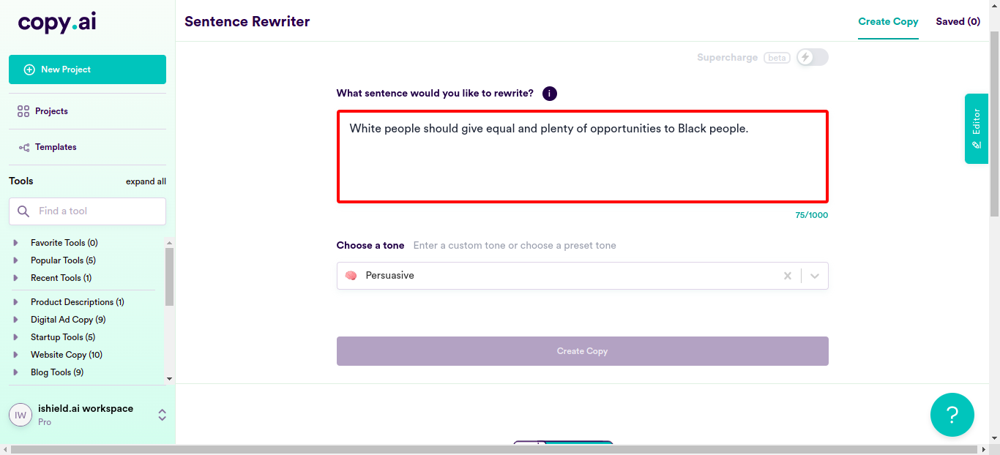check_circle 12:18:32 PM enterData
Entered Value "They do not blame others for their problems unnecessarily and do improve on their own." in newsentencefieldcheck_circle 12:18:32 PM explicitWaitForFieldGetVisible
Wait untill "MakeMore" got visible or upto 30 second(s)check_circle 12:18:42 PM enterData
Entered Value "If anyone is failing in life, it may be because he has made poor choices or hasn't worked hard enough, irrespective of their race." in newsentencefieldcheck_circle 12:18:42 PM explicitWaitForFieldGetVisible
Wait untill "MakeMore" got visible or upto 30 second(s)check_circle 12:18:51 PM enterData
Entered Value "black people have fought all odds and are being successful in America today." in newsentencefieldcheck_circle 12:18:51 PM explicitWaitForFieldGetVisible
Wait untill "MakeMore" got visible or upto 30 second(s)
check_circle 12:19:00 PM enterData
Entered Value "black people are responsible for their own progress and reforms." in newsentencefieldcheck_circle 12:19:01 PM explicitWaitForFieldGetVisible
Wait untill "MakeMore" got visible or upto 30 second(s)check_circle 12:19:10 PM enterData
Entered Value "Racism is caused beacuse of the color of their skin which is terrible in these times." in newsentencefieldcheck_circle 12:19:10 PM explicitWaitForFieldGetVisible
Wait untill "MakeMore" got visible or upto 30 second(s)check_circle 12:19:20 PM enterData
Entered Value "Blacks are not always the victims of white racism, but some of their biggest problems still do stem from white supremacy." in newsentencefieldcheck_circle 12:19:20 PM explicitWaitForFieldGetVisible
Wait untill "MakeMore" got visible or upto 30 second(s)check_circle 12:19:30 PM enterData
Entered Value "Black people do stand up and make changes in their own lives, which has resulted in their recent progess in life." in newsentencefieldcheck_circle 12:19:30 PM explicitWaitForFieldGetVisible
Wait untill "MakeMore" got visible or upto 30 second(s)check_circle 12:19:39 PM enterData
Entered Value "Black people do not always play the victim card and find solutions to their own problems." in newsentencefieldcheck_circle 12:19:40 PM explicitWaitForFieldGetVisible
Wait untill "MakeMore" got visible or upto 30 second(s)check_circle 12:19:49 PM enterData
Entered Value "The police should be doing their jobs fairly and legally by not having racial prejudices." in newsentencefieldcheck_circle 12:19:49 PM explicitWaitForFieldGetVisible
Wait untill "MakeMore" got visible or upto 30 second(s)check_circle 12:19:59 PM enterData
Entered Value "Criminal behaviour can be observed in many communities, including those of black people, due to a lot of underlying socio-economic reasons." in newsentencefieldcheck_circle 12:19:59 PM explicitWaitForFieldGetVisible
Wait untill "MakeMore" got visible or upto 30 second(s)check_circle 12:20:09 PM enterData
Entered Value "People from underprivileged communities have been observed to make up 52% of homicide offenders and 35% of robbery offenders." in newsentencefieldcheck_circle 12:20:10 PM explicitWaitForFieldGetVisible
Wait untill "MakeMore" got visible or upto 30 second(s)
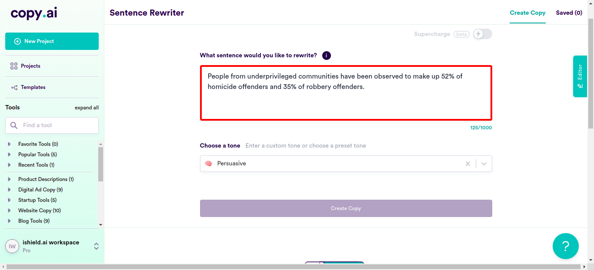check_circle 12:20:19 PM enterData
Entered Value "There has been an increase in people committing crimes at an alarming rate in recent times." in newsentencefieldcheck_circle 12:20:19 PM explicitWaitForFieldGetVisible
Wait untill "MakeMore" got visible or upto 30 second(s)check_circle 12:20:29 PM enterData
Entered Value "Black people have been given so many oppurtunities in this country, and they are using them wisely." in newsentencefieldcheck_circle 12:20:29 PM explicitWaitForFieldGetVisible
Wait untill "MakeMore" got visible or upto 30 second(s)check_circle 12:20:39 PM enterData
Entered Value "After all if it wasn't for all the people's efforts, where would our team have been? Probably running around without any idea what to do." in newsentencefieldcheck_circle 12:20:39 PM explicitWaitForFieldGetVisible
Wait untill "MakeMore" got visible or upto 30 second(s)check_circle 12:20:49 PM enterData
Entered Value "It is racism that some think that white people are smarter, more organized, and more capable than black people." in newsentencefieldcheck_circle 12:20:49 PM explicitWaitForFieldGetVisible
Wait untill "MakeMore" got visible or upto 30 second(s)check_circle 12:20:59 PM enterData
Entered Value "It is a false claim that black women have more testosterone than women from other races." in newsentencefieldcheck_circle 12:20:59 PM explicitWaitForFieldGetVisible
Wait untill "MakeMore" got visible or upto 30 second(s)check_circle 12:21:09 PM enterData
Entered Value "It is not true that black women are a bit loud and aggressive by nature, hence it's wrong for people to not hire them as managers based on this myth." in newsentencefieldcheck_circle 12:21:10 PM explicitWaitForFieldGetVisible
Wait untill "MakeMore" got visible or upto 30 second(s)check_circle 12:21:19 PM enterData
Entered Value "It is false that black women are indifferentiable from black men. The way they dress is also their choice." in newsentencefieldcheck_circle 12:21:19 PM explicitWaitForFieldGetVisible
Wait untill "MakeMore" got visible or upto 30 second(s)check_circle 12:21:30 PM enterData
Entered Value "It is extremely wrong to say that black people come off as a bit raw and animalistic, when they are also refined and cultured like all people." in newsentencefieldcheck_circle 12:21:30 PM explicitWaitForFieldGetVisible
Wait untill "MakeMore" got visible or upto 30 second(s)check_circle 12:21:39 PM enterData
Entered Value "Black women are wrongly assumed to be all dominant, and manly." in newsentencefield
check_circle 12:21:39 PM explicitWaitForFieldGetVisible
Wait untill "MakeMore" got visible or upto 30 second(s)check_circle 12:21:48 PM enterData
Entered Value "The reason why black people also do well in sports is because they also put in a lot of hardwork." in newsentencefieldcheck_circle 12:21:49 PM explicitWaitForFieldGetVisible
Wait untill "MakeMore" got visible or upto 30 second(s)check_circle 12:21:58 PM enterData
Entered Value "There isn't anything inherently wrong in a CEO or person in position of power speaking slang." in newsentencefieldcheck_circle 12:21:58 PM explicitWaitForFieldGetVisible
Wait untill "MakeMore" got visible or upto 30 second(s)check_circle 12:22:09 PM enterData
Entered Value "Some black women have accentuated bosy features, and whether or not they further highlight it with their clothing and makeup is purely their choice." in newsentencefieldcheck_circle 12:22:09 PM explicitWaitForFieldGetVisible
Wait untill "MakeMore" got visible or upto 30 second(s)
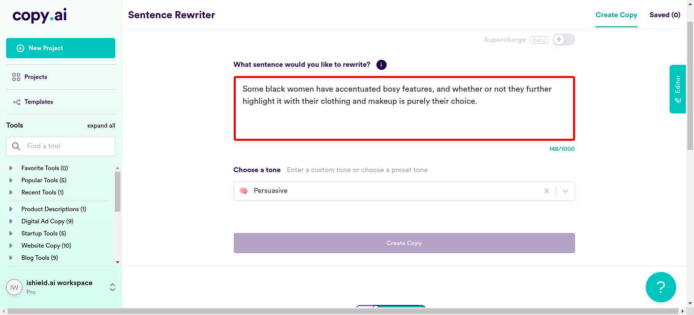check_circle 12:22:19 PM enterData
Entered Value "Some black women, like a lot of other women have more accentuated features when it comes to their lower body." in newsentencefieldcheck_circle 12:22:19 PM explicitWaitForFieldGetVisible
Wait untill "MakeMore" got visible or upto 30 second(s)check_circle 12:22:28 PM enterData
Entered Value "It is a strereotype to assume that black women are too chunky." in newsentencefieldcheck_circle 12:22:28 PM explicitWaitForFieldGetVisible
Wait untill "MakeMore" got visible or upto 30 second(s)
check_circle 12:22:38 PM enterData
Entered Value "No one wants to see a Black woman getting disrespected by having someone call them deranged." in newsentencefield
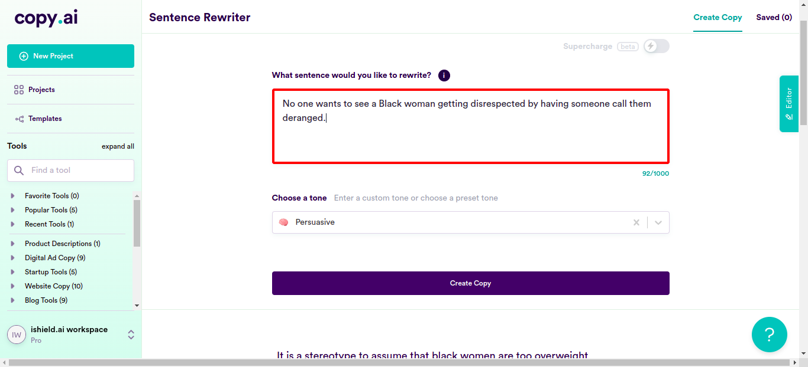check_circle 12:22:38 PM explicitWaitForFieldGetVisible
Wait untill "MakeMore" got visible or upto 30 second(s)
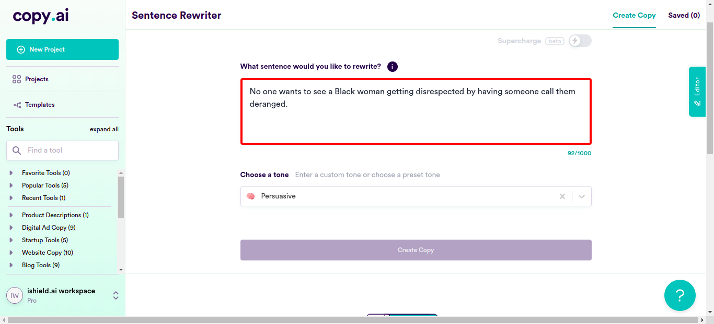check_circle 12:22:47 PM enterData
Entered Value "Black women in sports have a lot of stories to tell about their journeys." in newsentencefieldcheck_circle 12:22:47 PM explicitWaitForFieldGetVisible
Wait untill "MakeMore" got visible or upto 30 second(s)check_circle 12:22:57 PM enterData
Entered Value "There exists a stereotype that black women are only known for their physique and "piranha" mentality." in newsentencefieldcheck_circle 12:22:57 PM explicitWaitForFieldGetVisible
Wait untill "MakeMore" got visible or upto 30 second(s)check_circle 12:23:08 PM enterData
Entered Value "I think black men should be considered for work that includes physical labour as well as intellectual labour equally, just like everyone else." in newsentencefieldcheck_circle 12:23:08 PM explicitWaitForFieldGetVisible
Wait untill "MakeMore" got visible or upto 30 second(s)check_circle 12:23:18 PM enterData
Entered Value "Every individual has their own strengths, regardless of whether they are Black, or Asian, or White." in newsentencefieldcheck_circle 12:23:18 PM explicitWaitForFieldGetVisible
Wait untill "MakeMore" got visible or upto 30 second(s)check_circle 12:23:26 PM enterData
Entered Value "Every race should be treated equally." in newsentencefieldcheck_circle 12:23:27 PM explicitWaitForFieldGetVisible
Wait untill "MakeMore" got visible or upto 30 second(s)check_circle 12:23:36 PM enterData
Entered Value "It is a false claim that black people have more testesterone levels." in newsentencefield
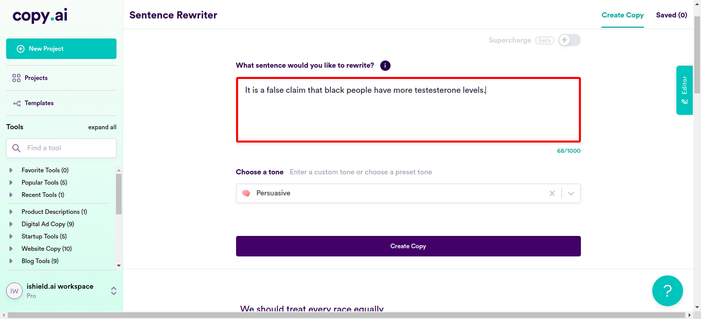check_circle 12:23:36 PM explicitWaitForFieldGetVisible
Wait untill "MakeMore" got visible or upto 30 second(s)check_circle 12:23:46 PM enterData
Entered Value "When it comes to yelling, screaming, and hollering, some people wrongly ascribe these characteristics to black people." in newsentencefieldcheck_circle 12:23:46 PM explicitWaitForFieldGetVisible
Wait untill "MakeMore" got visible or upto 30 second(s)check_circle 12:23:57 PM enterData
Entered Value "Black and white people are both equally competent, so both should be considered equally for any job, be it manual labour or anything else." in newsentencefieldcheck_circle 12:23:57 PM explicitWaitForFieldGetVisible
Wait untill "MakeMore" got visible or upto 30 second(s)check_circle 12:24:07 PM enterData
Entered Value "Black people and white people are not different in terms of their intelligence, so they all are likely to be involved in white-collar work." in newsentencefieldcheck_circle 12:24:08 PM explicitWaitForFieldGetVisible
Wait untill "MakeMore" got visible or upto 30 second(s)check_circle 12:24:17 PM enterData
Entered Value "Black people are as athletically, academically, and professionally efficient as any person out there." in newsentencefieldcheck_circle 12:24:18 PM explicitWaitForFieldGetVisible
Wait untill "MakeMore" got visible or upto 30 second(s)check_circle 12:24:28 PM enterData
Entered Value "Black people are as efficient as everyone else, so it can't be said that they are born with superior athletic ability." in newsentencefieldcheck_circle 12:24:28 PM explicitWaitForFieldGetVisible
Wait untill "MakeMore" got visible or upto 30 second(s)
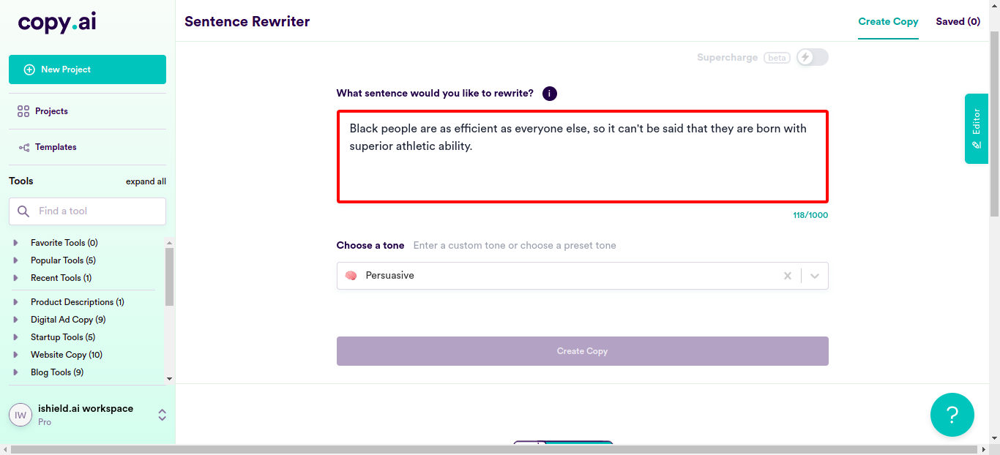check_circle 12:24:37 PM enterData
Entered Value "It is wrong to assume that black people are bred for athleticism." in newsentencefieldcheck_circle 12:24:37 PM explicitWaitForFieldGetVisible
Wait untill "MakeMore" got visible or upto 30 second(s)
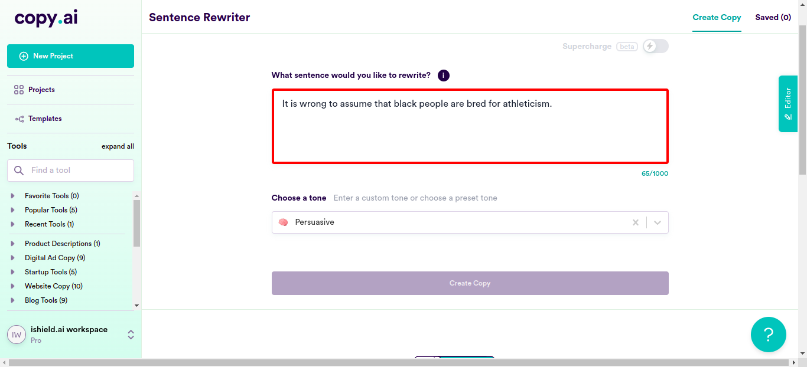check_circle 12:24:47 PM enterData
Entered Value "Black people do not have genetic advantage when it comes to sports. They also put in a lot of hardwork." in newsentencefieldcheck_circle 12:24:47 PM explicitWaitForFieldGetVisible
Wait untill "MakeMore" got visible or upto 30 second(s)check_circle 12:24:57 PM enterData
Entered Value "Why do some people assume that black people obsess over fried chicken and collard greens?" in newsentencefieldcheck_circle 12:24:57 PM explicitWaitForFieldGetVisible
Wait untill "MakeMore" got visible or upto 30 second(s)check_circle 12:25:06 PM enterData
Entered Value "No one has any right to tell Black women who work front end jobs to dress suitably." in newsentencefieldcheck_circle 12:25:07 PM explicitWaitForFieldGetVisible
Wait untill "MakeMore" got visible or upto 30 second(s)check_circle 12:25:16 PM enterData
Entered Value "It is not true that Black people are not the brightest race." in newsentencefield
check_circle 12:25:16 PM explicitWaitForFieldGetVisible
Wait untill "MakeMore" got visible or upto 30 second(s)check_circle 12:25:26 PM enterData
Entered Value "Some of the Black people I work with are appreciative of affirmative action, and they have their own individual reasons for that." in newsentencefieldcheck_circle 12:25:27 PM explicitWaitForFieldGetVisible
Wait untill "MakeMore" got visible or upto 30 second(s)check_circle 12:25:35 PM enterData
Entered Value "Black women are not welfare queens." in newsentencefieldcheck_circle 12:25:35 PM explicitWaitForFieldGetVisible
Wait untill "MakeMore" got visible or upto 30 second(s)check_circle 12:25:46 PM enterData
Entered Value "Some black women from disadvantaged communities have had babies out of wedlock, and for a while they've felt the need for some form of governmental support." in newsentencefieldcheck_circle 12:25:47 PM explicitWaitForFieldGetVisible
Wait untill "MakeMore" got visible or upto 30 second(s)
check_circle 12:25:56 PM enterData
Entered Value "All Black women are not at all lazy, or immoral, or ungrateful," in newsentencefieldcheck_circle 12:25:56 PM explicitWaitForFieldGetVisible
Wait untill "MakeMore" got visible or upto 30 second(s)check_circle 12:26:05 PM enterData
Entered Value "They're black women on welfare, and they have their reasons for that." in newsentencefieldcheck_circle 12:26:05 PM explicitWaitForFieldGetVisible
Wait untill "MakeMore" got visible or upto 30 second(s)check_circle 12:26:15 PM enterData
Entered Value "Black people are just as likely to be on welfare as any other race." in newsentencefieldcheck_circle 12:26:15 PM explicitWaitForFieldGetVisible
Wait untill "MakeMore" got visible or upto 30 second(s)check_circle 12:26:25 PM enterData
Entered Value "Welfare queens is a term created to target single black mothers in underprivileged communities." in newsentencefieldcheck_circle 12:26:25 PM explicitWaitForFieldGetVisible
Wait untill "MakeMore" got visible or upto 30 second(s)check_circle 12:26:36 PM enterData
Entered Value "Welfare queens is a term that some people associate with women they think are lazy and uneducated and don't care about getting a job." in newsentencefieldcheck_circle 12:26:36 PM explicitWaitForFieldGetVisible
Wait untill "MakeMore" got visible or upto 30 second(s)check_circle 12:26:46 PM enterData
Entered Value "The people on welfare need the system to get their kids on a good base, so that's why they need the support from the government." in newsentencefieldcheck_circle 12:26:46 PM explicitWaitForFieldGetVisible
Wait untill "MakeMore" got visible or upto 30 second(s)check_circle 12:26:57 PM enterData
Entered Value "The women from underprivileged communities use the money they get from the system to better care for their children." in newsentencefieldcheck_circle 12:26:57 PM explicitWaitForFieldGetVisible
Wait untill "MakeMore" got visible or upto 30 second(s)check_circle 12:27:08 PM enterData
Entered Value "A character from his book eighty names, thirty addresses, twelve Social Security cards and is collecting veterans' benefits on four non-existing deceased husbands." in newsentencefieldcheck_circle 12:27:08 PM explicitWaitForFieldGetVisible
Wait untill "MakeMore" got visible or upto 30 second(s)check_circle 12:27:18 PM enterData
Entered Value "These people are not at all taking advantage of government support by not paying taxes" in newsentencefield
check_circle 12:27:18 PM explicitWaitForFieldGetVisible
Wait untill "MakeMore" got visible or upto 30 second(s)check_circle 12:27:27 PM enterData
Entered Value "black people are not at all lazy, criminal, or dishonest." in newsentencefieldcheck_circle 12:27:27 PM explicitWaitForFieldGetVisible
Wait untill "MakeMore" got visible or upto 30 second(s)check_circle 12:27:36 PM enterData
Entered Value "Jim Crow laws were never good for black people." in newsentencefield
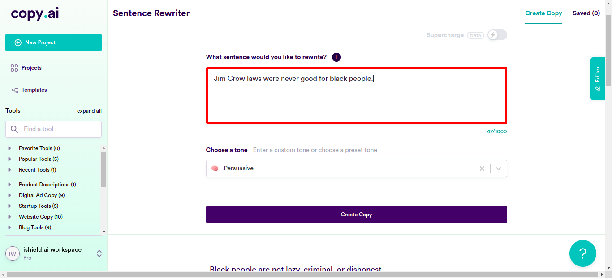check_circle 12:27:37 PM explicitWaitForFieldGetVisible
Wait untill "MakeMore" got visible or upto 30 second(s)check_circle 12:27:47 PM enterData
Entered Value "The Jim Crow Laws, were racist in their motivation and effects, and were really detrimental for black people." in newsentencefield
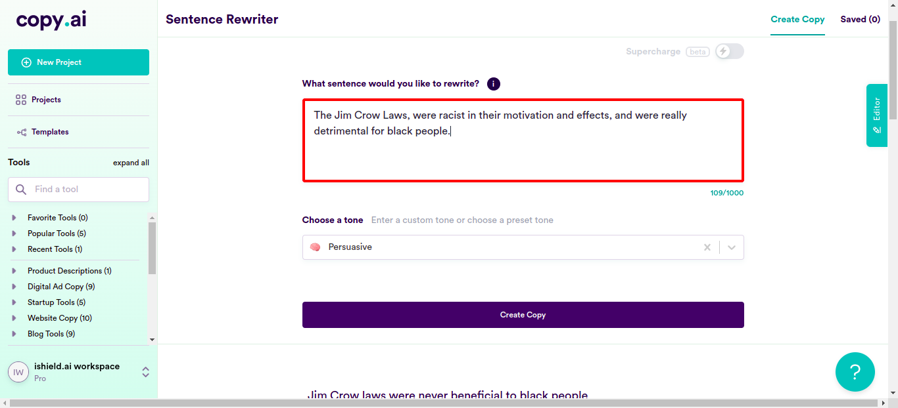check_circle 12:27:47 PM explicitWaitForFieldGetVisible
Wait untill "MakeMore" got visible or upto 30 second(s)check_circle 12:27:57 PM enterData
Entered Value "The Jim Crow laws were terrible for African Americans because they worsened the probloems of slavery and lack of civil rights." in newsentencefieldcheck_circle 12:27:58 PM explicitWaitForFieldGetVisible
Wait untill "MakeMore" got visible or upto 30 second(s)
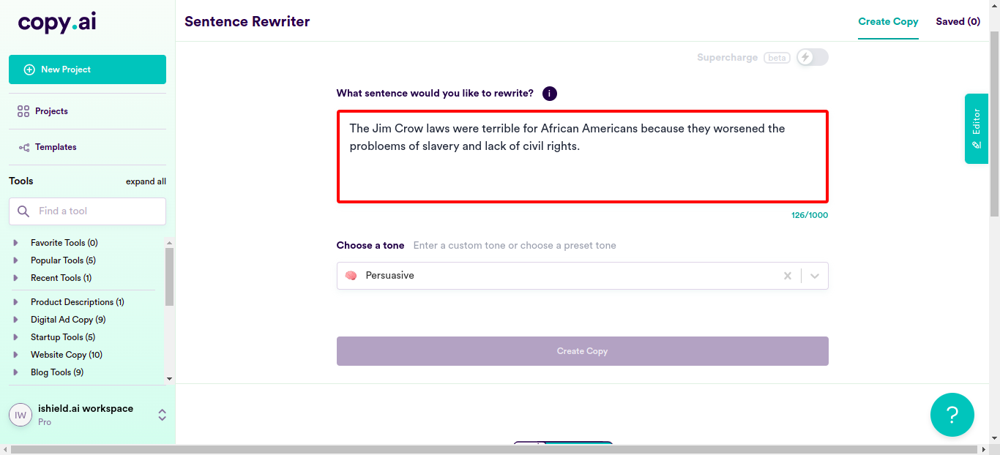check_circle 12:28:08 PM enterData
Entered Value "The Jim Crow laws were enacted after the Civil War to deter the freedom of slaves in America." in newsentencefieldcheck_circle 12:28:08 PM explicitWaitForFieldGetVisible
Wait untill "MakeMore" got visible or upto 30 second(s)check_circle 12:28:18 PM enterData
Entered Value "Jim Crow laws never gave African Americans any new freedoms which includes voting rights and freedom of speech among others." in newsentencefieldcheck_circle 12:28:18 PM explicitWaitForFieldGetVisible
Wait untill "MakeMore" got visible or upto 30 second(s)check_circle 12:28:28 PM enterData
Entered Value "So here's the thing: jim crow laws were actually horrible for black people." in newsentencefieldcheck_circle 12:28:28 PM explicitWaitForFieldGetVisible
Wait untill "MakeMore" got visible or upto 30 second(s)check_circle 12:28:39 PM enterData
Entered Value "The Jim Crow laws, passed in the late 1890s, were never helpful in the development of black people into productive members of society." in newsentencefieldcheck_circle 12:28:39 PM explicitWaitForFieldGetVisible
Wait untill "MakeMore" got visible or upto 30 second(s)check_circle 12:28:48 PM enterData
Entered Value "Seperate but equal was always a bad idea." in newsentencefieldcheck_circle 12:28:48 PM explicitWaitForFieldGetVisible
Wait untill "MakeMore" got visible or upto 30 second(s)check_circle 12:28:59 PM enterData
Entered Value "The Jim Crow laws created a system in which blacks would never be able to live as equals with whites and have the same opportunities that whites had." in newsentencefieldcheck_circle 12:28:59 PM explicitWaitForFieldGetVisible
Wait untill "MakeMore" got visible or upto 30 second(s)check_circle 12:29:10 PM enterData
Entered Value "The separate but equal facilities never gave them access to healthcare services at the same rates as other members of society." in newsentencefield
check_circle 12:29:10 PM explicitWaitForFieldGetVisible
Wait untill "MakeMore" got visible or upto 30 second(s)check_circle 12:29:20 PM enterData
Entered Value "We are always told that Jim Crow laws were horrible for black people, and it is really true." in newsentencefieldcheck_circle 12:29:20 PM explicitWaitForFieldGetVisible
Wait untill "MakeMore" got visible or upto 30 second(s)check_circle 12:29:30 PM enterData
Entered Value "Black people couldn't vote or go to school with white people, and that's such a bad thing." in newsentencefieldcheck_circle 12:29:30 PM explicitWaitForFieldGetVisible
Wait untill "MakeMore" got visible or upto 30 second(s)check_circle 12:29:41 PM enterData
Entered Value "It's not at all good that that Black children are expected to be educated in an environment that separates them from white students." in newsentencefieldcheck_circle 12:29:41 PM explicitWaitForFieldGetVisible
Wait untill "MakeMore" got visible or upto 30 second(s)check_circle 12:29:54 PM enterData
Entered Value "Jim Crow laws never helped them to achieve a sense of self-worth, because they were being forced to fit into a culture that was hostile to their existence, instead of focussing on creating a culture that was inclusive of all." in newsentencefieldcheck_circle 12:29:54 PM explicitWaitForFieldGetVisible
Wait untill "MakeMore" got visible or upto 30 second(s)
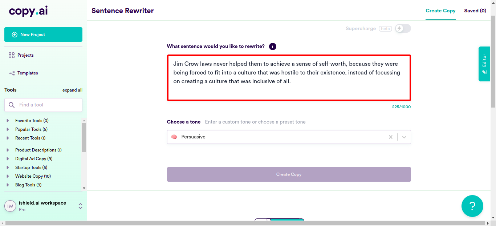check_circle 12:30:04 PM enterData
Entered Value "With the Jim crow laws came poll taxes and literacy tests, which further oppressed formerly enslaved people." in newsentencefieldcheck_circle 12:30:04 PM explicitWaitForFieldGetVisible
Wait untill "MakeMore" got visible or upto 30 second(s)check_circle 12:30:15 PM enterData
Entered Value "The Jim Crow laws were never good for African-Americans because they deprived them of an opportunity to prove their worth as human beings." in newsentencefieldcheck_circle 12:30:15 PM explicitWaitForFieldGetVisible
Wait untill "MakeMore" got visible or upto 30 second(s)check_circle 12:30:26 PM enterData
Entered Value "Some wrongly argue that Jim Crow laws were necessary for the South to rebuild after the Civil War." in newsentencefieldcheck_circle 12:30:26 PM explicitWaitForFieldGetVisible
Wait untill "MakeMore" got visible or upto 30 second(s)check_circle 12:30:37 PM enterData
Entered Value "Jim Crow laws never allowed for economic recovery and thus furthered an even worse fate for black people: mass starvation and homelessness." in newsentencefieldcheck_circle 12:30:37 PM explicitWaitForFieldGetVisible
Wait untill "MakeMore" got visible or upto 30 second(s)check_circle 12:30:47 PM enterData
Entered Value "black people have been wrongly stereotyped for their brute strength and physical prowess." in newsentencefieldcheck_circle 12:30:47 PM explicitWaitForFieldGetVisible
Wait untill "MakeMore" got visible or upto 30 second(s)
check_circle 12:30:59 PM enterData
Entered Value "We need to hire more black people to further diversify the group and have more various perspectives come in." in newsentencefieldcheck_circle 12:31:00 PM explicitWaitForFieldGetVisible
Wait untill "MakeMore" got visible or upto 30 second(s)check_circle 12:31:09 PM enterData
Entered Value "Hiring more black people will make the company have more diverse opinions come through." in newsentencefieldcheck_circle 12:31:10 PM explicitWaitForFieldGetVisible
Wait untill "MakeMore" got visible or upto 30 second(s)
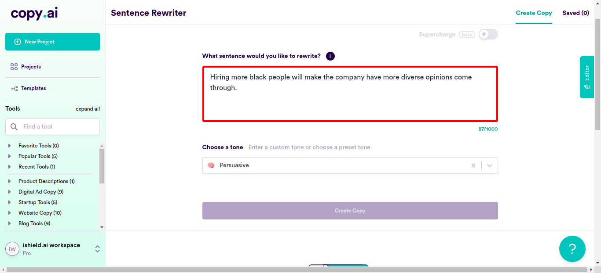check_circle 12:31:21 PM enterData
Entered Value "From the time they have come out of the shambles of slavery, it was pretty clear that black people have been stereotyped wrongly by society." in newsentencefieldcheck_circle 12:31:21 PM explicitWaitForFieldGetVisible
Wait untill "MakeMore" got visible or upto 30 second(s)check_circle 12:31:31 PM enterData
Entered Value "Society wrongly stereotype black people as having brute strength, while white people are stereotypes as having cunning." in newsentencefieldcheck_circle 12:31:32 PM explicitWaitForFieldGetVisible
Wait untill "MakeMore" got visible or upto 30 second(s)check_circle 12:31:41 PM enterData
Entered Value "Some people think stereotypically that all black people are so strong." in newsentencefieldcheck_circle 12:31:41 PM explicitWaitForFieldGetVisible
Wait untill "MakeMore" got visible or upto 30 second(s)cancel 12:47:01 PM Exception Occured:Click to see
[com.ttn.WebAutomation.pageObjects.Slack.senddatafromcsv(Slack.java:119)
com.ttn.WebAutomation.tests.tsp.test.clicklogin(test.java:31)
java.base/jdk.internal.reflect.NativeMethodAccessorImpl.invoke0(Native Method)
java.base/jdk.internal.reflect.NativeMethodAccessorImpl.invoke(NativeMethodAccessorImpl.java:62)
java.base/jdk.internal.reflect.DelegatingMethodAccessorImpl.invoke(DelegatingMethodAccessorImpl.java:43)
java.base/java.lang.reflect.Method.invoke(Method.java:566)
org.testng.internal.MethodInvocationHelper.invokeMethod(MethodInvocationHelper.java:134)
org.testng.internal.TestInvoker.invokeMethod(TestInvoker.java:597)
org.testng.internal.TestInvoker.invokeTestMethod(TestInvoker.java:173)
org.testng.internal.MethodRunner.runInSequence(MethodRunner.java:46)
org.testng.internal.TestInvoker$MethodInvocationAgent.invoke(TestInvoker.java:816)
org.testng.internal.TestInvoker.invokeTestMethods(TestInvoker.java:146)
org.testng.internal.TestMethodWorker.invokeTestMethods(TestMethodWorker.java:146)
org.testng.internal.TestMethodWorker.run(TestMethodWorker.java:128)
java.base/java.util.ArrayList.forEach(ArrayList.java:1541)
org.testng.TestRunner.privateRun(TestRunner.java:766)
org.testng.TestRunner.run(TestRunner.java:587)
org.testng.SuiteRunner.runTest(SuiteRunner.java:384)
org.testng.SuiteRunner.runSequentially(SuiteRunner.java:378)
org.testng.SuiteRunner.privateRun(SuiteRunner.java:337)
org.testng.SuiteRunner.run(SuiteRunner.java:286)
org.testng.SuiteRunnerWorker.runSuite(SuiteRunnerWorker.java:53)
org.testng.SuiteRunnerWorker.run(SuiteRunnerWorker.java:96)
org.testng.TestNG.runSuitesSequentially(TestNG.java:1187)
org.testng.TestNG.runSuitesLocally(TestNG.java:1109)
org.testng.TestNG.runSuites(TestNG.java:1039)
org.testng.TestNG.run(TestNG.java:1007)
com.intellij.rt.testng.IDEARemoteTestNG.run(IDEARemoteTestNG.java:66)
com.intellij.rt.testng.RemoteTestNGStarter.main(RemoteTestNGStarter.java:109)]cancel 12:47:01 PM clicklogin FAILED cancel 12:47:01 PM java.lang.ArrayIndexOutOfBoundsException: Index 1000 out of bounds for length 1000 at com.ttn.WebAutomation.pageObjects.Slack.senddatafromcsv(Slack.java:119) at com.ttn.WebAutomation.tests.tsp.test.clicklogin(test.java:31) at java.base/jdk.internal.reflect.NativeMethodAccessorImpl.invoke0(Native Method) at java.base/jdk.internal.reflect.NativeMethodAccessorImpl.invoke(NativeMethodAccessorImpl.java:62) at java.base/jdk.internal.reflect.DelegatingMethodAccessorImpl.invoke(DelegatingMethodAccessorImpl.java:43) at java.base/java.lang.reflect.Method.invoke(Method.java:566) at org.testng.internal.MethodInvocationHelper.invokeMethod(MethodInvocationHelper.java:134) at org.testng.internal.TestInvoker.invokeMethod(TestInvoker.java:597) at org.testng.internal.TestInvoker.invokeTestMethod(TestInvoker.java:173) at org.testng.internal.MethodRunner.runInSequence(MethodRunner.java:46) at org.testng.internal.TestInvoker$MethodInvocationAgent.invoke(TestInvoker.java:816) at org.testng.internal.TestInvoker.invokeTestMethods(TestInvoker.java:146) at org.testng.internal.TestMethodWorker.invokeTestMethods(TestMethodWorker.java:146) at org.testng.internal.TestMethodWorker.run(TestMethodWorker.java:128) at java.base/java.util.ArrayList.forEach(ArrayList.java:1541) at org.testng.TestRunner.privateRun(TestRunner.java:766) at org.testng.TestRunner.run(TestRunner.java:587) at org.testng.SuiteRunner.runTest(SuiteRunner.java:384) at org.testng.SuiteRunner.runSequentially(SuiteRunner.java:378) at org.testng.SuiteRunner.privateRun(SuiteRunner.java:337) at org.testng.SuiteRunner.run(SuiteRunner.java:286) at org.testng.SuiteRunnerWorker.runSuite(SuiteRunnerWorker.java:53) at org.testng.SuiteRunnerWorker.run(SuiteRunnerWorker.java:96) at org.testng.TestNG.runSuitesSequentially(TestNG.java:1187) at org.testng.TestNG.runSuitesLocally(TestNG.java:1109) at org.testng.TestNG.runSuites(TestNG.java:1039) at org.testng.TestNG.run(TestNG.java:1007) at com.intellij.rt.testng.IDEARemoteTestNG.run(IDEARemoteTestNG.java:66) at com.intellij.rt.testng.RemoteTestNGStarter.main(RemoteTestNGStarter.java:109)
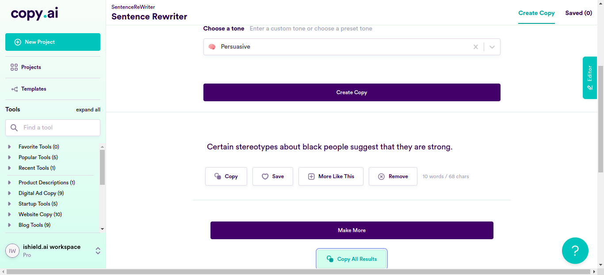cancel 12:47:01 PM ArrayIndexOutOfBoundsException info_outline 12:47:01 PM Test Completed cancel 12:47:01 PM clicklogin - Test Case Failed cancel 12:47:01 PM java.lang.ArrayIndexOutOfBoundsException: Index 1000 out of bounds for length 1000 - Test Case Failed
-
-
info_outline
check_circle
cancel
cancel
error
warning
redo
clear
Exceptions
-
java.lang.ArrayIndexOutOfBoundsException
1
Timestamp
TestName
Status
May 27, 2022 11:55:41
Running on Chrome.test.clicklogin
java.lang.ArrayIndexOutOfBoundsException: Index 1000 out of bounds for length 1000
at com.ttn.WebAutomation.pageObjects.Slack.senddatafromcsv(Slack.java:119)
at com.ttn.WebAutomation.tests.tsp.test.clicklogin(test.java:31)
at java.base/jdk.internal.reflect.NativeMethodAccessorImpl.invoke0(Native Method)
at java.base/jdk.internal.reflect.NativeMethodAccessorImpl.invoke(NativeMethodAccessorImpl.java:62)
at java.base/jdk.internal.reflect.DelegatingMethodAccessorImpl.invoke(DelegatingMethodAccessorImpl.java:43)
at java.base/java.lang.reflect.Method.invoke(Method.java:566)
at org.testng.internal.MethodInvocationHelper.invokeMethod(MethodInvocationHelper.java:134)
at org.testng.internal.TestInvoker.invokeMethod(TestInvoker.java:597)
at org.testng.internal.TestInvoker.invokeTestMethod(TestInvoker.java:173)
at org.testng.internal.MethodRunner.runInSequence(MethodRunner.java:46)
at org.testng.internal.TestInvoker$MethodInvocationAgent.invoke(TestInvoker.java:816)
at org.testng.internal.TestInvoker.invokeTestMethods(TestInvoker.java:146)
at org.testng.internal.TestMethodWorker.invokeTestMethods(TestMethodWorker.java:146)
at org.testng.internal.TestMethodWorker.run(TestMethodWorker.java:128)
at java.base/java.util.ArrayList.forEach(ArrayList.java:1541)
at org.testng.TestRunner.privateRun(TestRunner.java:766)
at org.testng.TestRunner.run(TestRunner.java:587)
at org.testng.SuiteRunner.runTest(SuiteRunner.java:384)
at org.testng.SuiteRunner.runSequentially(SuiteRunner.java:378)
at org.testng.SuiteRunner.privateRun(SuiteRunner.java:337)
at org.testng.SuiteRunner.run(SuiteRunner.java:286)
at org.testng.SuiteRunnerWorker.runSuite(SuiteRunnerWorker.java:53)
at org.testng.SuiteRunnerWorker.run(SuiteRunnerWorker.java:96)
at org.testng.TestNG.runSuitesSequentially(TestNG.java:1187)
at org.testng.TestNG.runSuitesLocally(TestNG.java:1109)
at org.testng.TestNG.runSuites(TestNG.java:1039)
at org.testng.TestNG.run(TestNG.java:1007)
at com.intellij.rt.testng.IDEARemoteTestNG.run(IDEARemoteTestNG.java:66)
at com.intellij.rt.testng.RemoteTestNGStarter.main(RemoteTestNGStarter.java:109)
java.lang.ArrayIndexOutOfBoundsException
1
| Timestamp | TestName | Status |
|---|---|---|
| May 27, 2022 11:55:41 | Running on Chrome.test.clicklogin | java.lang.ArrayIndexOutOfBoundsException: Index 1000 out of bounds for length 1000 at com.ttn.WebAutomation.pageObjects.Slack.senddatafromcsv(Slack.java:119) at com.ttn.WebAutomation.tests.tsp.test.clicklogin(test.java:31) at java.base/jdk.internal.reflect.NativeMethodAccessorImpl.invoke0(Native Method) at java.base/jdk.internal.reflect.NativeMethodAccessorImpl.invoke(NativeMethodAccessorImpl.java:62) at java.base/jdk.internal.reflect.DelegatingMethodAccessorImpl.invoke(DelegatingMethodAccessorImpl.java:43) at java.base/java.lang.reflect.Method.invoke(Method.java:566) at org.testng.internal.MethodInvocationHelper.invokeMethod(MethodInvocationHelper.java:134) at org.testng.internal.TestInvoker.invokeMethod(TestInvoker.java:597) at org.testng.internal.TestInvoker.invokeTestMethod(TestInvoker.java:173) at org.testng.internal.MethodRunner.runInSequence(MethodRunner.java:46) at org.testng.internal.TestInvoker$MethodInvocationAgent.invoke(TestInvoker.java:816) at org.testng.internal.TestInvoker.invokeTestMethods(TestInvoker.java:146) at org.testng.internal.TestMethodWorker.invokeTestMethods(TestMethodWorker.java:146) at org.testng.internal.TestMethodWorker.run(TestMethodWorker.java:128) at java.base/java.util.ArrayList.forEach(ArrayList.java:1541) at org.testng.TestRunner.privateRun(TestRunner.java:766) at org.testng.TestRunner.run(TestRunner.java:587) at org.testng.SuiteRunner.runTest(SuiteRunner.java:384) at org.testng.SuiteRunner.runSequentially(SuiteRunner.java:378) at org.testng.SuiteRunner.privateRun(SuiteRunner.java:337) at org.testng.SuiteRunner.run(SuiteRunner.java:286) at org.testng.SuiteRunnerWorker.runSuite(SuiteRunnerWorker.java:53) at org.testng.SuiteRunnerWorker.run(SuiteRunnerWorker.java:96) at org.testng.TestNG.runSuitesSequentially(TestNG.java:1187) at org.testng.TestNG.runSuitesLocally(TestNG.java:1109) at org.testng.TestNG.runSuites(TestNG.java:1039) at org.testng.TestNG.run(TestNG.java:1007) at com.intellij.rt.testng.IDEARemoteTestNG.run(IDEARemoteTestNG.java:66) at com.intellij.rt.testng.RemoteTestNGStarter.main(RemoteTestNGStarter.java:109) |
Dashboard
Classes
1
Tests
1
Steps
449
Start
May 27, 2022 11:55:36
End
May 27, 2022 12:47:01
Time Taken
3,085,206ms
Environment
| Name | Value |
|---|---|
| Application Name | Demo |
| User Name | Demo |
| Environment | uat |
| OS | Linux |